一、游戏概述与系统架构
1.1 产品基本信息
| 维度 | 内容 | 说明 |
|---|---|---|
| 产品名称 | 王者荣耀（Honor of Kings） | 海外版本使用独立品牌名 |
| 开发商 | 腾讯天美工作室群 L1工作室 | 原卧龙工作室，旗下还开发了《传说对决》（Arena of Valor）等MOBA产品 |
| 上线时间 | 2015年11月26日 | 截至2026年已运营超过10年 |
| 游戏类型 | 5v5 MOBA手游 | 多人在线战术竞技，移动端适配版本 |
| 支持平台 | iOS / Android | 移动端原生，非端游移植 |
| 日活跃用户 | 国内日活跃用户常年过亿 | 全球手游日活跃用户第一梯队 |
| 对局时长 | 平均15-20分钟 | 针对移动端碎片化场景优化 |
| 技术引擎 | Unity | 针对中低端机型做了大量性能适配 |
| 游戏体积 | 完整资源包约6-10GB 精简资源包约3-4GB | 提供分级资源下载，玩家可根据设备存储空间选择完整或精简版本，降低低存储机型的安装门槛 |
| 主要竞品 | 英雄联盟手游、决胜巅峰等 | 国内MOBA手游市场的核心竞争者 |
1.2 游戏题材与美术风格
题材定位：王者荣耀以"东方幻想"为核心题材，取材自中国历史、神话、文学中的知名人物（如李白、关羽、妲己、孙悟空等），进行现代化的二次创作和角色重塑。选择这一题材路线有两层价值。其一，中国玩家对这些人物有天然的认知基础，新英雄无需从零建立认知——玩家看到"关羽"就知道大致是一个冲锋型战士，上手速度和代入感远高于完全原创IP。其二，题材背景直接为技能设计提供思路——例如李白的"侠客"身份对应多段位移的飘逸打法，角色气质自然导向对应的玩法机制，降低了英雄设计的概念成本。此外，架空世界观（王者大陆）使同一英雄可推出多个平行宇宙版本的皮肤，其商业价值在于：单英雄可售卖多款不同主题的高品质皮肤而不会产生设定冲突，持续为外观消费提供新的购买理由。
美术风格：采用偏写实的3D渲染风格，英雄之间建模比例不追求统一——低龄化或喜剧定位的英雄偏Q版，写实定位的英雄偏真实比例。技能特效是王者美术的核心竞争力之一：每个英雄的技能有鲜明的色彩标签（如安琪拉的红色、王昭君的冰蓝），团战中通过颜色即可快速区分技能来源。皮肤是美术投入的最大载体——传说级以上皮肤不仅更换技能特效配色，还包含专属回城动画、待机动作和语音包，单款皮肤的美术资源投入接近制作半个新英雄的体量。
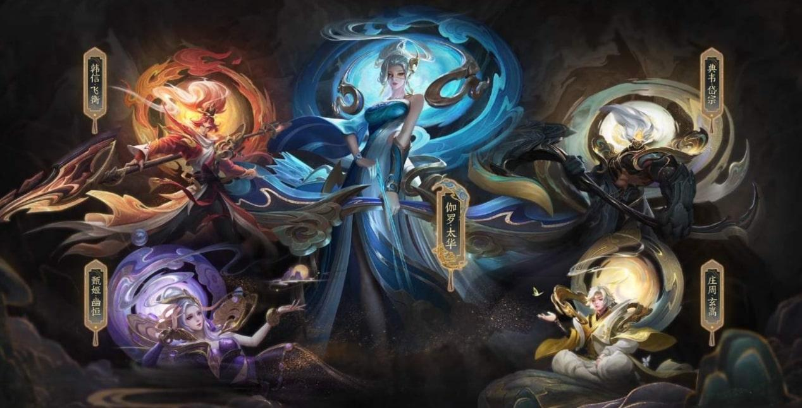
1.3 核心设计约束与应对策略
王者荣耀的设计起点是移动端MOBA，而非端游MOBA的移植。移动端存在三个硬性约束：触屏操作精度低于键鼠、屏幕尺寸限制信息展示密度、碎片化使用场景限制对局时长。天美针对每个约束采取了对应的设计策略。
| 约束条件 | 具体表现 | 王者荣耀的应对策略 | 策略代价与补偿 |
|---|---|---|---|
| 触屏操作 精度限制 | 手指遮挡屏幕，精确点击困难，无法实现键鼠级的走A、补兵、技能瞄准 | 左摇杆移动 + 右技能轮盘的双摇杆操作模式；补兵改为不补也有经济（补刀额外约30%奖励）；增加智能施法和自动锁定辅助 | 牺牲了操作精细度的上限；通过英雄技能机制差异化（指向性技能 vs 非指向性技能、不同操作难度的英雄分层）来保留操作深度空间 |
| 屏幕尺寸 限制 | 5-7寸屏幕 vs 24-27寸显示器，信息展示空间仅为端游的1/10 | ①移除插眼/排眼系统，视野博弈压缩到草丛一个维度——没有战争迷雾，视野只有"看得见"和"草丛里看不到"两种状态；②UI大幅简化：只保留小地图、技能按钮、装备商店、信号系统等核心战斗信息，其余功能收入二级菜单 | 牺牲了端游中由眼位和战争迷雾构成的复杂视野博弈；补偿方式是草丛密度和位置分布——固定草丛替代了动态眼位，玩家靠地图记忆而非道具来判断风险区域，在降低操作量的同时保留了战场信息不对称带来的gank和埋伏空间 |
| 碎片化 使用场景 | 用户可能在等车、午休、课间等3-20分钟不等的碎片时间打开游戏 | 对局时长控制在15-20分钟，通过多层机制共同调控：4分钟防御塔保护期确保前期发育不被干扰；10分钟暗影暴君/主宰提升团战收益将对抗推向高潮；20分钟风暴龙王提供护盾+雷击+强化兵线三合一效果强制终结比赛 | 牺牲了长对局的策略纵深和后期翻盘空间；补偿方式是通过宏观节奏调控——防御塔保护期、兵线推进速度、龙资源刷新间隔、英雄等级和装备成型曲线等参数，将完整的"发育→对抗→决胜"三阶段压缩在20分钟内完成，确保碎片时间能打完一局完整对战 |
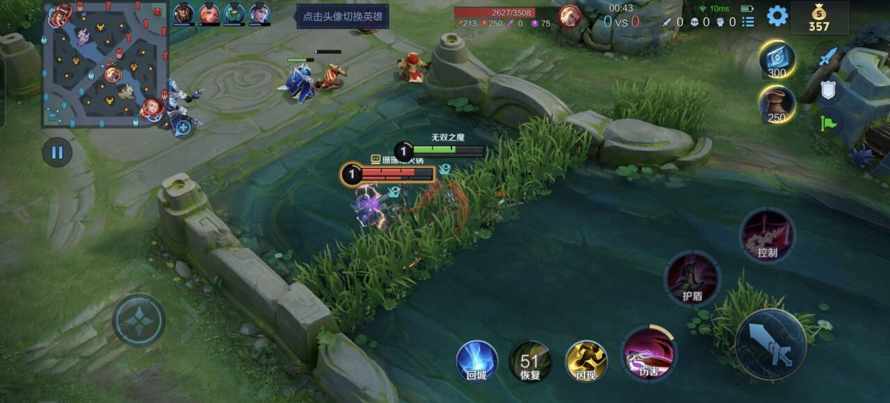
1.4 系统架构分层
王者荣耀的系统可按功能定位和与核心玩法距离分为四个层级。这个分层模型是后续所有分析的组织框架。
| 层级 | 功能定位 | 包含系统 | 设计原则 |
|---|---|---|---|
| L1 核心层 | 决定核心玩法与公平竞技体验 | 5v5对战匹配、BP禁选、局内战斗（英雄操作/装备/地图机制/中立资源） | 竞技公平性优先；任何改动不能破坏5v5对战的核心体验 |
| L2 内容层 | 决定游戏"好不好玩"，提供对局内的内容体验与乐趣 | 英雄体系（职业分类/技能设计/上线节奏/平衡调整）、局内经济体系、战斗数值体系（攻击力/护甲/穿透等计算规则） | 内容更新频率和品质决定玩家对"好玩"的持续感知，持续的内容供给使游戏保持新鲜感，延长产品生命周期；新英雄是最重要的内容载体 |
| L3 驱动层 | 提供长期目标和行为动机，驱动长期留存 | 段位体系（排位/巅峰赛/英雄战力/国服排名）、社交系统（好友/战队/亲密关系/开黑语音） | 为不同类型玩家提供差异化的长期目标——竞技型玩家靠段位和排名驱动，社交型玩家靠关系链和开黑习惯绑定 |
| L4 变现层 | 在不破坏L1-L2的前提下实现商业价值 | 皮肤商店、战令进阶、积分夺宝、星元部件、赛事运营（KPL）、IP联动 | 付费不能影响竞技公平性，确保零充值和低消费玩家也能获得完整的竞技体验；核心收入源于外观消费而非数值售卖 |
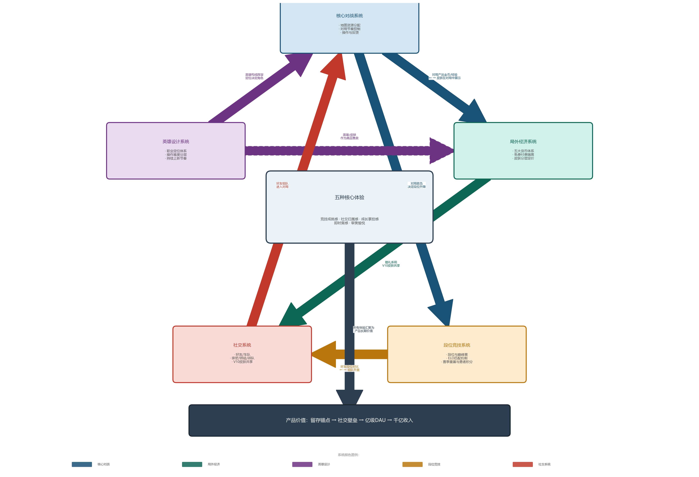
1.5 个人体验概况
本人在王者荣耀中累计游戏时长超过2000小时，最高段位为最强王者，数年间消费约数千元，以购买皮肤为主。
在王者荣耀上线前后，国内手游市场正处于MOBA品类的空缺期——英雄联盟已验证了MOBA品类的用户规模天花板，但移动端尚无一款产品能承接这个需求。本人当时关注到这一市场格局，并先后体验了乱斗西游2、全民超神等早期产品。从整体产品成熟度来看，这些产品在多个维度上与成熟MOBA存在差距：英雄设计方面，技能机制与MOBA品类的适配度不够成熟——部分英雄的技能组更像是RPG技能的移植，而非为5v5对战场景量身设计；对战系统方面，地图资源分布、装备体系、中立生物等核心要素的设计完整度不够，对局的策略层次偏薄；配套系统方面，排位和社交体系尚未形成完整框架。
王者荣耀上线后经历了快速的用户增长和产品迭代，本人经历了这一过程。从产品层面理解其爆发原因，核心在于它是第一款在移动端还原了"完整MOBA体验"的产品——不只是对局内的操作和战斗，更包括段位体系的竞技驱动、英雄池的持续扩充节奏、赛季制的内容更新周期、以及微信/QQ社交链对用户获取和留存的系统性支撑。这些要素在王者荣耀之前没有产品全部做到，而王者荣耀将其整合为一个运转良好的整体，这是它从同期产品中拉开差距的根本原因。
本人的游戏动机经历了三个阶段的变化：初期纯粹因为游戏好玩——英雄机制的多样性和每局不同的阵容组合带来了高复玩性；中期核心驱动力转向段位攀升——排位赛的星数增减和晋级赛的紧张感构成了强烈的目标牵引；后期社交关系成为最主要的留存原因——和朋友开黑的习惯性约定比游戏本身的新鲜感更难以割舍。正因为亲历了这三层驱动的完整演变，本人对王者荣耀各驱动层的设计意图和实际效果有直接的体感认知。
个人比较喜欢钻研游戏机制。英雄技能方面，除关注核心机制辨识度和操作难度分层外，也会研究一些更深层次的交互效果——比如技能与召唤师技能的配合可以产生常规操作之外的连招变化。装备方面，喜欢挖掘不同出装流派的可能性和适用场景，本质上是对系统深度和机制边界的一种探索。模式规则方面，会比较各娱乐模式在核心规则上的变化如何改变玩家的行为策略和对局节奏。局外经济方面，关注过不同模式的金币/经验获取效率差异。付费方面以皮肤消费为主，对皮肤的定价分层、限定策略和返场机制有直接的消费体感。
长期深度体验后的核心判断：王者荣耀的成功不在于某一个系统的设计精妙，而在于它围绕移动端的三个硬性约束（触屏精度低、屏幕尺寸小、使用场景碎片化），在每个系统层面都做出了"加减法"——操作上减精度加智能辅助，视野上减插眼加草丛密度，时长上减后期拉锯加风暴龙王终结机制。这些设计叠加微信/QQ的社交链冷启动，形成了一个竞技深度不输端游MOBA、但使用门槛远低于端游的大众产品。
二、市场表现与用户结构
本章基于公开数据平台和第三方研究机构的数据，对王者荣耀的市场表现进行多维度分析。数据采集时间范围为2025年全年，部分指标延伸至2026年7月。
2.1 数据来源说明
本报告的市场数据来源于以下五个平台/机构，各平台的数据覆盖范围和统计口径有所不同，综合分析以提高结论的可靠性。
| 数据来源 | 平台类型 | 覆盖范围 | 主要用途 |
|---|---|---|---|
| 七麦数据 | 第三方移动应用数据平台 | 中国区App Store下载量、收入估算 | iOS端下载量和收入趋势分析 |
| AppMagic / Sensor Tower | 全球移动应用数据平台 | 全球App Store + Google Play | 全球收入排名和市场份额对比 |
| 百度指数 | 搜索引擎趋势分析 | 百度搜索关键词热度 | 用户关注度变化和舆情趋势 |
| App Store评论 | 官方应用商店 | 中国区用户评分和评论 | 用户满意度分析和负面反馈归类 |
| TapTap | 第三方游戏社区 | 游戏评分和用户评价 | 核心玩家群体的口碑和评价倾向 |
2.2 下载量分析
根据七麦数据，2025年中国区App Store（iPhone + iPad）下载量合计约3,837万次。结合Counterpoint Research发布的iPhone在中国活跃设备占比约25%的数据，推算安卓端下载量约1.15亿次，国内全平台年度下载量合计约1.53亿次。
下载量的月度分布与赛季更新、新英雄上线、春节档期等节点高度相关。春节和周年庆期间为下载高峰，日常下载量维持在相对稳定的水平——这表明王者荣耀的用户获取已进入成熟期，增量主要来自节点性营销拉动而非日常自然增长。
| 平台 | 年度下载量 | 说明 |
|---|---|---|
| iOS（iPhone + iPad） | 约3,837万次 | 七麦数据，中国区App Store |
| 安卓（推算） | 约1.15亿次 | 基于iPhone活跃设备占比25%推算 |
| 国内全平台合计 | 约1.53亿次 | iOS + 安卓估算值 |

2.3 收入分析
根据七麦数据，2025年中国区App Store（iPhone + iPad）收入约6.97亿美元。按2025年人民币兑美元平均汇率7.1429折算，约合人民币49.75亿元。
基于iOS收入占比推算，2025年王者荣耀安卓端收入约110-130亿元人民币，全球全平台年度总收入约160-180亿元人民币。在全球手游收入排名中，王者荣耀与PUBG Mobile、原神等产品常年位列前三。
| 平台 | 年度收入 | 说明 |
|---|---|---|
| iOS（iPhone + iPad） | 约6.97亿美元 （约49.75亿元人民币） | 七麦数据，中国区App Store 汇率：2025年均7.1429 |
| 安卓（推算） | 约110-130亿元人民币 | 基于iOS/安卓收入比例推算 |
| 全球全平台合计 | 约160-180亿元人民币 | 含中国区iOS+安卓及海外版本 |
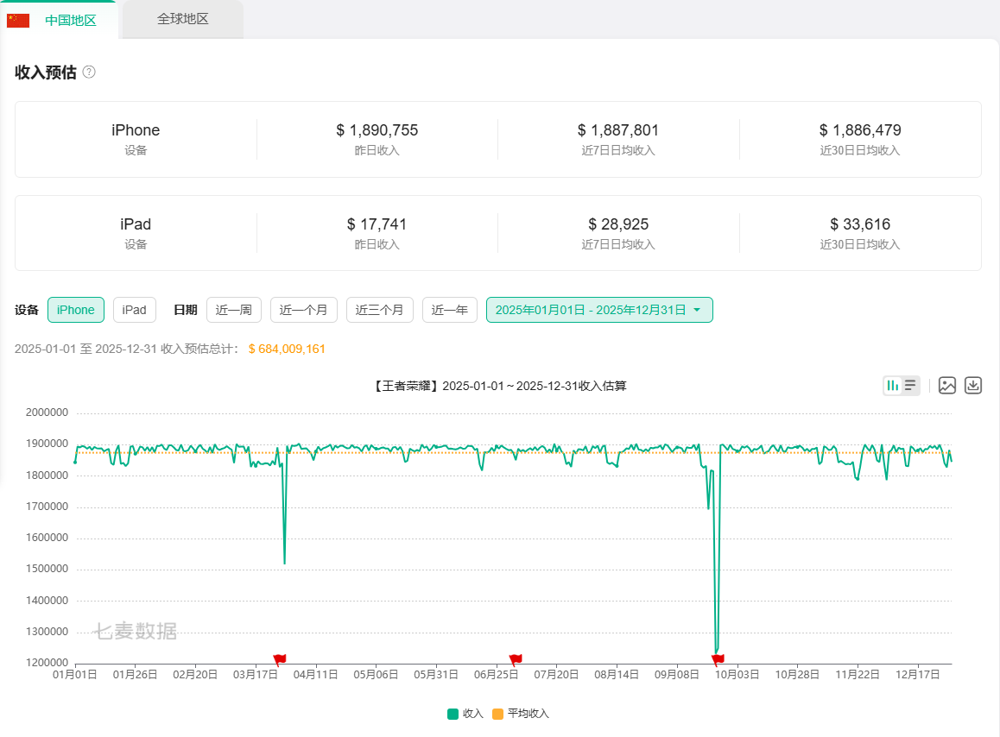
2.4 百度指数分析
百度指数反映用户在搜索引擎中对"王者荣耀"关键词的主动搜索热度，是衡量品牌关注度和舆情波动的有效指标。
2025年全年数据：关键词"王者荣耀"整体日均搜索指数约30,180，其中移动端日均约27,250，PC端日均约2,930。移动端占比约90%，与王者荣耀作为手游产品的属性一致。搜索热度在赛季更新日、新英雄发布日和春节档期出现明显峰值，峰值为日均值的2-3倍。
| 指标 | 数值 | 说明 |
|---|---|---|
| 整体日均搜索指数 | 约30,180 | PC端 + 移动端合计 |
| 移动端日均搜索指数 | 约27,250 | 移动端占比约90% |
| PC端日均搜索指数 | 约2,930 | 占比约10% |
| 搜索峰值 | 日均值的2-3倍 | 集中于赛季更新、新英雄发布、春节档 |
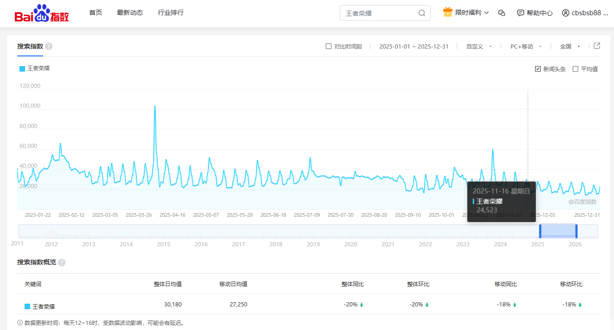
2.5 用户口碑分析
用户口碑数据来自App Store和TapTap两个平台。App Store评论者以iOS端泛用户为主，评论基数大但评分标准分散；TapTap用户以核心玩家为主，评价标准更严格，对版本变化的敏感度更高。两个平台从不同角度反映玩家满意度。
| 平台 | 评分 | 评论量 | 主要负面维度 |
|---|---|---|---|
| App Store | 3.3分（满分5分） | 约1,495万条 | 匹配机制（ELO体感）、英雄平衡、举报惩罚不足、闪退/卡顿/460延迟 |
| TapTap | 总评5.0分 / 近期3.6分 | 约37万条 | 核心玩家对匹配机制和英雄平衡的负面反馈更为集中 |
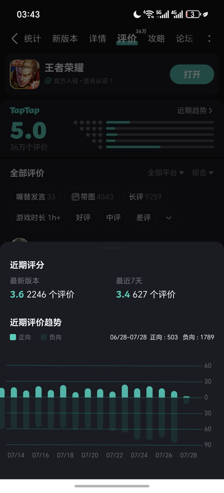
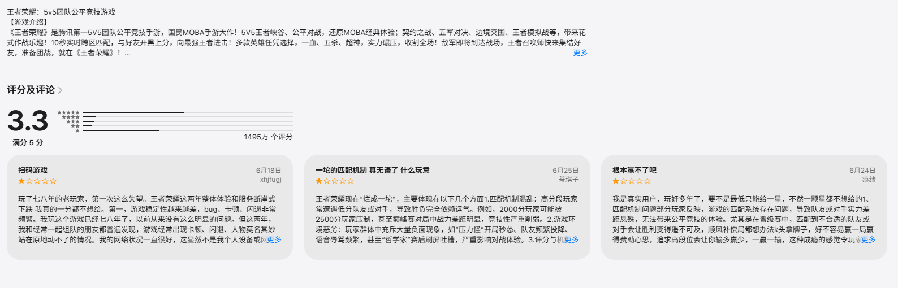
两个平台的评分均偏低，评论内容在负面维度上呈现高度一致性。以下从匹配机制、英雄平衡、网络与性能三个方面展开分析。
| 负面维度 | 玩家典型发言 | 设计分析 |
|---|---|---|
| 匹配机制 （ELO） | "连胜之后必连败，系统在控我胜率" "把把都是逆风局，怎么c都赢不了" "队友越来越菜，对面越来越强" | ELO为每位玩家分配隐藏MMR，匹配时使双方总分接近，理论胜率趋近50%。设计意图是控制段位攀升速度——防止玩家短期触达实力天花板后丧失排位动力。"差一点就能上去"的张力是驱动持续排队的核心心理机制。 困境在于实现路径：系统通过"强弱搭配"平衡总分，队内方差悬殊导致双方体验均受损。ELO只能观测输赢结果，无法精确归因过程贡献，个体错配不可完全避免。 |
| 英雄平衡 | "新英雄刚出就超模，卖完皮肤就削" "冷门英雄几年不加强，策划忘了？" "氪金英雄就是强，不氪没法玩" | 100+英雄的全局平衡是高维优化问题——任一数值调整都会影响其与所有英雄的对位关系、装备适配度、不同段位表现差异。新英雄需要强度吸引使用率，但强度过高破坏平衡；削弱后已购皮肤无法退款，产生"骗氪"认知。策划在吸引力和公平性之间持续寻找动态平衡点。 |
| 网络与性能 | "460准时出现在团战时候" "快20G了，每次更新都想劝退" "闪退扣我信誉分，谁负责？" | 460延迟成因涉及网络链路、服务器节点部署、帧率同步等多个技术层面。运营超过10年的产品需持续兼容大量设备型号，适配成本随规模增长。2024年起更新包体积优化缩减50%以上，但老设备老化与资源膨胀的矛盾持续。 |
三个负面维度的共同特征是：它们都不是简单的"bug"或"设计失误"，而是产品规模（亿级DAU、100+英雄、数千种设备型号）与玩家个体体验之间的结构性矛盾。匹配机制的困境源于个人表现无法精确量化的根本限制，英雄平衡的难度随英雄数量呈组合爆炸式增长，网络问题受限于物理基础设施和用户设备分布。理解这些问题是结构性的而非偶然性的，才能正确评估王者荣耀在用户口碑管理上的长期挑战。
三、核心对战循环
核心对战循环是王者荣耀所有系统的基础。本章使用MDA框架（Mechanics机制-Dynamics动态-Aesthetics体验）进行分层分析。
3.1 机制层：地图结构与资源分布
3.1.1 王者峡谷地图
| 地图元素 | 参数 | 设计目的 |
|---|---|---|
| 地图结构 | 镜像对称的5v5地图，三条兵线+野区构成主要活动区域 | 设计：三路兵线+野区=4条经济线，分配给5名玩家，存在结构性缺口。 驱动：四条经济线无法被五人均分——三条兵线各需一人驻守，野区资源需要专人收割。玩家必须在兵线经济与野区经济之间做出选择，由此自然分化出对抗路、中路、发育路、打野、游走五种职能定位。 结果：五个位置的分工不是策划通过规则强制指定的，而是地图经济结构倒逼出的最优解。由资源分布驱动的分工比直接指定更具说服力——玩家不是因为被告知"你是打野"而去打野，而是因为不这样做就无法高效获取资源。 |
| 兵线 | 每30秒刷新一波（近战、远程、炮车），中路兵线行进时间最短 | 设计：兵线每30秒固定刷新，中路兵线最短=中单最先完成兵线清理。 驱动：中单清理完兵线后有一段空档时间，可选择游走支援边路或配合打野入侵。边路玩家则必须在清理兵线和回城补给之间做时间规划。 结果：中路成为全队的游走枢纽，gank节奏由此发起。兵线周期即决策周期——推塔、gank、回城补给的时机，全部以兵线到达时间为基准。 |
| 防御塔 | 共11座（3路×3+2座基地塔+水晶）。前4分钟免伤50% | 设计：防御塔将地图划分为三层空间——塔后（安全区）、塔前（博弈区）、敌方塔前（危险区）。防御塔同时是推进的路径节点——摧毁敌方水晶的前提是摧毁沿途所有防御塔，塔的分布定义了进攻方向和推进节奏。前4分钟免伤50%，越塔成本极高。 驱动：前期玩家以对线发育为主，防御塔提供安全的退守空间。4分钟免伤消失后推塔效率翻倍，双方开始主动尝试推塔和越塔强杀。防御塔同时是gank的空间支点——敌方在塔前清线时站位靠前，留出了被打野绕后的空间。 结果：防御塔不仅是保护机制，更是推进路径节点和gank的空间参照物。4分钟免伤移除与英雄达到4级（解锁大招）同步触发——对抗强度在此自然升级。整局游戏的推进节奏被精确锚定在防御塔的分布和耐久度上。 |
| 野区 | 双方半区各有8处野怪营地（上半区4处+下半区4处），共计16处；河道另有暴君/主宰2处龙坑及1处共享野怪。普通营地30秒首刷/间隔70秒；红蓝buff30秒首刷/间隔90~100秒/持续70秒；暴君/主宰2分钟首刷/间隔3分钟。自S30赛季起从6处扩展至当前规模 | 设计：野怪是中立资源，不属于任何一方，但刷新在固定位置。S30将营地从12处扩至16处，新增野怪靠近己方防御塔。 驱动：野区资源的存在直接催生了打野位——必须有专人负责收割野区经济，否则这部分资源将被浪费。打野需离开己方安全区才能获取野怪；线上英雄路过野区时会顺手清理野怪补充经济；优势方会尝试入侵对方野区抢夺资源。S30新增的靠近己方的野怪，使劣势方至少保留一个安全经济点。 结果：野区成为团战的触发器——双方同时瞄准同一处资源时，冲突便会爆发。MOBA的核心对抗逻辑不是"我要击杀你"，而是"我们都想要这个资源，因此必然发生对抗"。S30的扩容不是简单的资源数量增加，而是通过资源点位置分布降低了劣势方被完全压制的可能性。 |
| 暴君/主宰 | 暴君提供全队金币+经验；主宰召唤强化兵线推进。刷新于河道龙坑，首次刷新时间为4分钟 | 设计：暴君/主宰在河道中央刷新，是全地图最高价值的中立资源。刷新即产生压力——己方不取，对方就可能取。 驱动：刷新倒计时促使双方提前在龙坑附近集结，争抢视野和站位。打龙时全队暴露在龙坑内，是对方开团的最佳时机。 结果：龙的设计目的不是"给优势方追加优势"，而是"强迫双方在固定时间点发生对抗"。20分钟后风暴龙王的三合一效果（护盾+雷击+强化兵线）进一步将设计意图从"提供优势"切换为"终结比赛"——解决优势方迟迟推不上高地导致的僵局。 |
| 草丛 | 约60处，进入草丛后对外部单位不可见，可埋伏 | 设计：草丛提供固定位置的隐身效果，替代端游的可购买眼位道具。分布密度和位置决定了地图上哪些路线安全、哪些路线危险。 驱动：玩家依靠位置记忆判断风险——路过草丛时下意识绕行或用技能探草；埋伏方利用草丛发动突袭。 结果：在没有任何道具系统的情况下，仅靠地图上固定分布的草丛就实现了完整的视野博弈。进草意味着获取信息优势，探草意味着承担风险。草的分布本身就是一种无声的地图语言，引导玩家在哪些路线上快速通过、在哪些路线上谨慎通行。 |
| 河道 | 地图中央的分割线，暴君/主宰刷新点，gank的主要路径 | 设计：河道位于双方领地交界处，本身不产出经济，但所有争夺性资源均位于河道之中。 驱动：玩家走出己方半区即暴露在可被gank的危险中，必须在推进兵线和保证安全之间持续权衡。控制河道视野的一方掌握资源主动权。 结果：河道的设计目的不在于"经过"，而在于"控制"。它是一条隐形的势力范围分割线——哪一方能安全地占据河道，哪一方就掌握了这张地图的节奏。 |
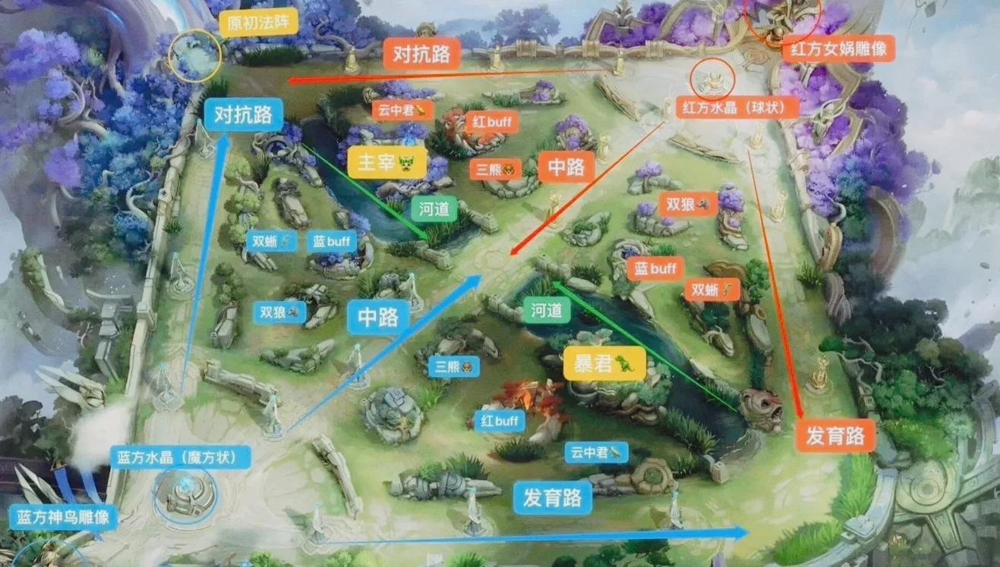
3.1.2 局内经济系统
局内经济系统包含五种基础获取途径，并设有全局经济追赶机制对各项收益进行动态调节。各途径的收益参数、获取条件和设计意图如下。
| 经济来源 | 参数 | 获取条件 | 设计目的 |
|---|---|---|---|
| 自然增长 | 初始300金币 30秒开始，每秒+3金币 4分钟累计约933金币 10分钟累计约1,710金币 | 无行为要求，全场生效 | 设计：每秒3金的恒定流入，与对局状态完全无关。 驱动：劣势方即使被完全压制、无法补兵、无法进入野区，仍然拥有一条持续运转的经济底线。优势方无需争取这笔收入——它是零风险的被动保障。 结果：翻盘始终保留理论空间。同时，自然增长率直接决定英雄装备成型的时间窗口——调整这个参数，可以在不改动其他任何系统的情况下拉升或压缩全局节奏。 |
| 补兵收益 | 补刀得100%，不补刀约77% 近战兵：63/42（补/不补） 中程兵：66/44 远程兵：44/29 炮车兵：92/63 多人吃线：2人各80%，3人各55% | 对小兵完成最后一击； 多人吃线需在同一区域 | 设计：补刀和不补刀之间存在约23%的收益差。多人吃线时单人收益下降（2人各80%，3人各55%），该系数降低了玩家被迫共享兵线时的效率损失（如游走协助发育路压制时分享兵线经济）。无论是否补刀，获取兵线经济的前提是玩家必须出现在兵线附近。 驱动：①操作层——补刀时机和走位精度直接决定线上经济获取效率；②博弈层——补刀必须靠近兵线，靠前站位即暴露在对手消耗和打野gank的威胁中，每一次补刀都是一次站位风险判断；③运营层——补刀要求玩家出现在兵线附近，无法同时兼顾游走和收兵，由此产生清理兵线权与游走权之间的持续取舍。 结果：补刀收益差不单是"让熟练玩家获得更多经济"，而是用经济激励驱动三个层次的主动决策。三条兵线同时推进，必须有人分别驻守——兵线的空间分布天然要求队伍分散站位，多人吃线系数则确保被迫共享兵线时不会过度损失经济效率。 |
| 野怪击杀 | 普通营地：50~65金（开局） ，10分钟峰值80~96金 红蓝buff：72~87金（开局） ，10分钟峰值125金，持续70秒 暴君：全队每人约70~100金 主宰：全队每人约90~100金 河道之灵：边路55~68金，中路110~134金 | 进入野区击杀中立生物； 暴君/主宰需团队协作 | 设计：野怪不属于任何一方，但刷新在固定位置。S30将营地从12处扩至16处，新增野怪靠近己方防御塔。新增靠近己方基地的野怪的核心意图是为打野提供一条"安全经济底线"——即使在己方野区被对方全面入侵的最劣局势下，打野仍有一处靠近己方防御塔、相对安全的野怪可以收割，不至于完全断绝对局内经济的获取。 驱动：打野必须离开己方安全区才能获取野怪；线上英雄路过野区时会顺手清理野怪补充经济；优势方会尝试入侵对方野区抢夺资源。S30新增的靠近己方的野怪，使劣势方至少保留一个安全经济点。 结果：野区成为团战的触发器——双方同时瞄准同一处资源时，冲突便会爆发。MOBA的核心对抗逻辑不是"我要击杀你"，而是"我们都想要这个资源，因此必然发生对抗"。S30的扩容不是简单的资源数量增加，而是通过资源点位置分布降低了劣势方被完全压制的可能性——总资源量提升的同时，劣势方的经济底线也得到了保障。 |
| 防御塔摧毁 | 参与推塔者：120金币 全队每人：80金币 全队合计：440金币 | 摧毁敌方防御塔； 可通过团战推进、对线压制、 或分带偷塔实现 | 设计：推塔经济是一次性的节点型收益，一座塔440金约等于两次击杀的收益。 驱动：团队在推掉塔的瞬间获得集中经济注入，直接拉开团队经济差距。全队均享的分配方式使未参与推进的玩家也能从局部优势中获益。 结果：全员围绕推塔这一最高经济回报目标行动，而非各自发育。推塔经济激励主动进攻——不推塔的团队等于放弃了最高效的经济来源。 |
| 击杀/助攻 | 击杀收益=被击杀者当前赏金值 初始赏金：200金币 一血赏金：300金币 自身赏金随击杀数递增（最高约600） 自身赏金随死亡数递减（最低约20） 取得击杀后自身赏金重置为200 助攻池=被击杀者赏金的50% ，由所有助攻者平分 | 击杀或参与击杀敌方英雄 | 设计：击杀收益等于被击杀者当前的赏金值。每名玩家的赏金值是其近期表现的函数——击杀越多赏金越高（最高约600），阵亡越多赏金越低（最低约20）。 驱动：高赏金目标成为对方优先集火的高价值猎物，对方会组织资源来终结你。低赏金目标虽仍可被击杀（以限制其地图行动或阻止其参与团战），但击杀收益持续降低，使优势方无法通过反复击杀同一目标快速积累经济优势。取得击杀后自身赏金重置为200，意味着大幅落后的玩家通过一次击杀即可重新具备被终结的价值。 结果：赏金机制的底层逻辑是自动调节风险回报比——使强者被终结的回报足够大，使弱者被反复击杀的回报足够小，防止优势方通过反复击杀同一目标快速滚大雪球。原初试炼（S22）进一步将推塔、打龙纳入赏金累积，评估维度从人头扩展到全局行为表现。 |
| 经济追赶机制 （S29引入，S35深化） | 团队经济差触发追赶系数： 优势方击杀金币-8% 劣势方击杀金币+8% 触发阈值：0~6分钟差≥2000 ，6~10分钟差≥3000~4000 ，10分钟后差≥5000 S35新增：落后方击杀特定野怪额外+30%经济 | 团队经济差达到触发阈值后自动生效 | 设计：赏金调节只控制单个英雄的人头价值。如果劣势方始终无法击杀对方高赏金目标，赏金机制就无法生效。追赶系数是赏金之上的第二层兜底机制。 驱动：团队经济差达到阈值后，劣势方所有击杀收益自动获得百分比加成（+8%），优势方所有击杀收益自动衰减（-8%），无需挑选目标——任何击杀均可触发。S35的野怪额外经济进一步提供了不依赖团战的追赶路径。 结果：追赶系数与赏金调节构成双层负反馈系统——第一层调节个体（人头价值），第二层调节团队（全局收益系数）。两层叠加，确保经济差不会无限扩大，同时为劣势方提供多条追赶路线（击杀高赏金目标/任意击杀/清理特定野怪）。 |
3.1.3 装备体系
局内装备是将经济转化为战斗力的媒介。六个装备格位构成有限资源下的选择优化——每件装备都占用一个格位，选择一件意味着放弃另一件。装备系统按功能定位划分为六大类别。
装备系统是局内闭环的兑现环节——补刀、推塔、打龙、击杀产生金币，装备是金币转化为战斗力的唯一出口。玩家之所以在乎每一个补刀、每一只野怪、每一座塔，根本原因在于这些经济行为最终都会通过装备变成自己的战斗属性。如果取消装备系统，所有经济行为立刻失去意义。结果就是，玩家的一切地图行动天然围绕"获取更多经济以购买更强的装备"展开，而不需要系统用任务或引导去告诉玩家该做什么——装备系统让经济争夺成为玩家的内生动机，而非外部的强制目标。
| 装备类别 | 定位 | 核心属性 | 设计要点 |
|---|---|---|---|
| 攻击装备 | 提升物理输出 | 物理攻击、暴击率、暴击效果、物理穿透 | 穿透装分为固定穿透（暗影战斧）和百分比穿透（碎星锤/破晓），前者克制低护甲脆皮，后者克制高护甲坦克，出装需根据敌方护甲水平切换。 |
| 法术装备 | 提升法术输出 | 法术攻击、法术穿透、冷却缩减、法术吸血 | 法术装备的差异化主要来自被动效果（回响的范围伤害、面具的百分比灼烧、大书的法术增幅），而非面板数值梯度。法术吸血上限25%，限制法术英雄的续航强度。 |
| 防御装备 | 提升生存能力 | 物理防御、法术防御、生命值、冷却缩减 | 物防装多附带功能效果（不祥征兆减速攻击者、反甲反弹物理伤害、极寒风暴范围减速）；法防装以护盾和回复为主（魔女斗篷法术护盾、永夜守护受伤回血）。出装需根据对方输出类型针对性选择。 |
| 移动装备 | 提供基础机动 | 移动速度、韧性、减伤、冷却缩减 | 六种鞋子对应六种早期战术方向：抵抗之靴（韧性免控）、影忍之足（普攻减伤）、冷静之靴（冷却加速）、急速战靴（攻速）、疾步之靴（脱战移速）、秘法之靴（法穿+回蓝）。 |
| 打野装备 | 定义打野节奏 | 对野怪额外伤害、冷却缩减、生命值 | 限定携带惩击才可购买。四种打野刀对应不同风格：红刀（物理爆发）、蓝刀（法术持续）、紫刀（坦克肉装）、黄刀（真实伤害/控龙）。 |
| 辅助装备 | 团队功能性 | 光环效果、主动团队增益 | 不占兵线经济，通过辅助装被动获取分成。12分钟后移除经济惩罚，辅助开始正常获取经济。主动辅助装（救赎/奔狼）提供团战关键时刻的团队增益。 |
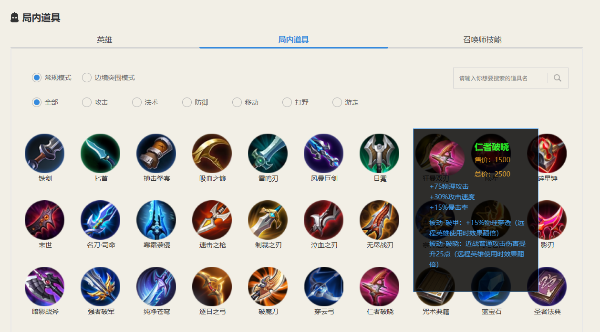
攻击、法术、防御三类构成出装的核心选择空间——玩家需根据双方阵容和局势在输出与生存之间持续权衡。移动、打野、辅助三类则由位置职能决定，选择范围相对固定。
六个格位的数量是取舍空间的校准——太少则出装趋同，英雄间差异被压缩；太多则无需取舍，每个玩家都能既肉又痛。实际分配通常为鞋子(1)+核心输出装(2~3)+保命装(1~2)+功能装(0~1)，刚好塞满。每一局中，玩家必须在"多一件输出"和"多一件保命"之间做出选择——顺风时倾向于加输出滚雪球，逆风时倾向于补保命求生存。同一英雄在不同对局中的最终出装组合可能完全不同。结果就是，出装成为玩家对当前局势判断的外在体现，而非千篇一律的固定方案。六个格位的约束确保了不存在"什么都能出"的万能解，每一次购买都是一次不可逆的路线选择。
属性计算规则
装备提供的属性通过以下公式转化为实际战斗效果。四项核心计算规则共同定义了出装的效率边界。
| 属性类型 | 计算公式 | 关键参数 | 设计含义 |
|---|---|---|---|
| 物理/法术减伤 | 减伤% = 防御 ÷ (602 + 防御) 等效生命 = 生命 ÷ (1 - 减伤%) | 602防御 = 50%减伤，该常数适用于物防和法防 | 等效生命值随防御线性增长——每1点防御的生存收益恒定，不存在"防御越高收益越低"。602这个数值决定了全游戏的坦度基准线。 |
| 穿透计算 | 有效防御 = (面板防御 - 固定穿透) × (1 - 百分比穿透) | 先结算固定穿透，再结算百分比穿透 | 固定穿透（暗影战斧/铭文）和百分比穿透（碎星锤/破晓）的分工对应不同目标护甲区间。先固定后百分比的顺序确保两种穿透的叠加始终可预测：若顺序相反，百分比先削减防御后固定穿透的收益会被放大，导致叠加效果不可控。 |
| 冷却缩减 | 实际CD = 原始CD × (1 - 冷却缩减%) | 上限40%，铭文+装备+BUFF合计 | 40%上限是技能频率与博弈质量的平衡点——若允许无限堆叠，技能趋近无冷却，走位和时机判断的博弈价值将大幅下降。 |
| 暴击 | 暴击伤害 = 普攻伤害 × (1 + 暴击效果%) | 暴击率上限100% 暴击效果上限250% 基础暴击效果200% | 暴击将部分伤害期望转化为概率事件——低暴击率时输出方差大（可能连续不暴击），高暴击率时输出趋近期望值。暴击效果（无尽战刃+50%）扩大方差幅度。上限的存在防止后期暴击伤害溢出。 |
攻速在2024年从档位制改为连续平滑收益——每一点攻速均直接提升输出频率，不再需要"卡阈值"。同时新增负攻速保护：攻速被降至负数时，低于0%部分的减速效果衰减50%，避免极端情况下普攻动作过于迟缓。
装备定价逻辑
防御装备整体定价低于攻击装备（如不祥征兆2180金币 vs 破晓3400金币），同等经济下坦克更早完成装备搭配。前期坦克利用装备成型优势主动开团、肉身探视野，输出型英雄则必须谨慎走位、专注发育，等待自己的装备成型时间点到来。强势期的转移由经济积累量自然触发——不需要系统推送风暴龙王、不需要限时任务，各位置本身就会在装备价格梯度的驱动下依次进入自己的强势窗口。坦克两件套即可参团，射手需要三件套才能接管比赛，前中期坦克带节奏、后期核心位接管——这条战斗力曲线是装备定价直接写定的。
出装的博弈层次
出装的决策深度分为四个嵌套层次，每一层对玩家的理解要求递增。第一层：自身最优build——在训练营可算出的理论最高输出或最高坦度的固定解。第二层：针对敌方阵容调整——对方AP多时补魔女斗篷，坦克多时换百分比穿透。第三层：对局状态调整——顺风出激进装滚雪球（如破军），逆风出稳健装保生存（如不祥征兆）。第四层：出装顺序的节奏博弈——裸大件还是先做小件过渡？先做核心输出还是先出保命装？同一套最终装备，出装顺序的差异可能决定前中期是压着打还是被压着打。低段位玩家停留在第一层（按推荐出装即可），高段位玩家在第四层获取优势——在关键时间点通过调整购买顺序获得战斗力峰值。四层博弈从静态到动态逐级递进，使同一英雄在同样经济下因出装决策差异产生截然不同的实际战斗力。
装备系统内置了一条完整的克制响应链：物理伤害→堆物防→出物穿→换法术伤害→出法防→混合伤害。当己方发现对方前排开始叠加物理防御时，输出位必须考虑补出百分比穿透或切换输出类型；当己方被对方AP英雄反复击杀时，前排必须补出魔女斗篷。玩家在出装上的每一次调整，都是对当前对局威胁的直接回应。这条克制链的设计意图在于：使全物理或全法术的极端阵容在后期必然吃亏——对方只需全堆一种防御即可抵消全部输出。装备系统在选人阶段即反向约束了阵容结构，迫使队伍在构建阵容时就考虑伤害类型多样化。
特殊装备机制
主动装备（辉月、纯净苍穹、血魔之怒等）占用一个装备格位，提供一次性的、改变瞬间博弈格局的效果。其核心价值在于区分使用时机——同样的主动装备，在正确时机使用和错误时机使用的效果差别极大。它不改变数值，但改变了博弈的维度和容错率。
专精装是2022-2023年间短暂存在的英雄专属装备机制，为特定英雄提供替代玩法方向（如张飞专精装将辅助定位改为战士定位），仅有六位英雄实装，2024年已被整体删除。其失败根源在于一个无法调和的矛盾：MOBA玩家天然趋向最优解，同一英雄在同一版本中不可能存在两种强度完全对等的玩法。专精装强则挤压传统玩法（如项羽专精装成为唯一选择），弱则无人问津。"给玩家多一种选择"的设计初衷，在最优解逻辑面前无法成立。
3.2 动态层：对局节奏与玩家行为
3.2.1 三阶段节奏模型
| 阶段 | 时间 | 设计机制 → 如何驱动玩家 | 设计结果 |
|---|---|---|---|
| 发育期 | 0~4分钟 | 防御塔免伤50%→越塔成本极高，玩家不敢轻易进攻；敌方在我方野区伤害-15%→入侵收益低，打野回己方野区发育；塔下英雄受伤害-25%→线上英雄有安全空间补刀发育 | 前4分钟对抗强度被精确压制，所有玩家获得稳定的发育窗口。对局不会一开始就因越塔强杀或野区被入侵而滚起雪球，确保了开局公平性。 |
| 对抗期 | 4~10分钟 | 4分钟免伤消失+弩车出击→推塔效率翻倍，双方主动抱团尝试推塔；暴君/主宰首次刷新→刷新倒计时迫使双方在龙坑提前集结争抢视野；优势方开始入侵对方野区→扩大经济差距 | 对局从各自发育切换为主动进攻。对抗强度在4分钟自然升级，与英雄达到4级解锁大招同步触发，不需要系统额外通知。中期成为体验最密集的阶段。 |
| 决胜期 | 10分钟后 | 风暴龙王刷新（护盾+雷击+强化兵线）→拿龙方获得接近必赢的团战优势，双方被迫在龙坑展开决战；大龙兵线强化推进→守塔难度大幅上升，高地攻防成为主战场 | 风暴龙王的设计意图从提供优势切换为终结比赛，解决优势方迟迟推不上高地导致的对局僵局。强化兵线使拖延不再对守方有利，比赛必然在龙王刷新后快速分出胜负。 |
从经济角度看，三个阶段对应三种不同的经济格局。发育期：所有人的经济来源高度趋同——兵线+基础野怪，个体间差距极小，经济总量的核心约束是兵线刷新周期。对抗期：推塔和击杀开始产生节点型收益（一座塔全队+440金≈两次击杀），经济差距从线性积累转为阶梯式跳跃，塔和龙成为拉开差距的主要载体。决胜期：经济差距基本锁死——追赶不再靠兵线缓慢积累，而必须通过击杀高赏金目标或抢到风暴龙王一次性获取足以翻盘的经济量。三个阶段的经济形态依次为：平权积累→节点拉开→锁定终结。
三阶段节奏的核心设计逻辑：对局节奏并非自然形成，而是通过防御塔免伤时间节点、弩车刷新时间、龙资源刷新间隔等机制精确控制的。策划的目标是将"最好的游戏体验"集中在4-15分钟的中期对抗阶段——前期不至于无聊，后期不至于拖沓。
与端游MOBA（如英雄联盟）对比，王者的节奏压缩是产品定位的直接结果。英雄联盟的发育期通常为8~12分钟，全场对局30~40分钟；王者的发育期仅4分钟，全场15~20分钟。这个压缩并非简单地把端游的时间轴除以二——它是由手机用户的使用场景决定的：单次游戏时长预期本身就是15~20分钟，先有这个产品约束，再反推三阶段的时间分配和每个阶段的设计机制强度。同样的"发育→对抗→决胜"三段结构，在不同平台上被缩放到了完全不同的时间刻度上。
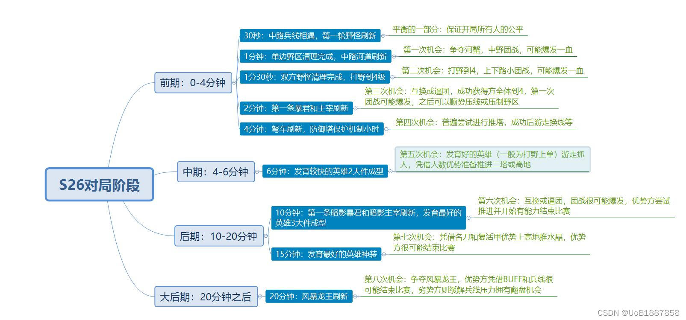
3.2.2 位置分工的形成机制
王者荣耀的五个位置（对抗路、中路、发育路、游走、打野）不是官方强制分配，而是在地图资源分布约束下自发涌现的最优解。根本原因在于：四个经济来源（三路兵线+野区）需要分配给五个玩家，必然有一个玩家（游走）不能独占经济来源，因此需要辅助装提供替代收益。
位置分工这套自发涌现的体系，对游戏本身有三重设计价值。第一，降低陌生人协作的沟通成本——五个互不认识的玩家排进同一局，如果每局都要临时协商谁走哪路、谁打野，匹配体验将极为混乱。位置分工使玩家在匹配前即可预设偏好，进入对局后各自直奔自己的分路，无需任何文字交流即可完成分工。第二，为英雄设计提供分类框架——新英雄从设计之初就有明确的位置对标，技能组、数值曲线、装备适配都围绕该位置的职能展开；平衡调整也不需要逐一对比全部120+英雄，只需在同位置英雄之间校准强度。第三，使玩家可以专精而非通才——一个玩家不需要掌握所有五个位置的玩法，可以深耕对抗路或打野，在同一位置上持续积累技巧和博弈经验。更深层的价值在于：五种位置对应五种截然不同的玩家性格偏好。喜欢正面硬刚的玩家在对抗路找到归属，享受运筹帷幄的玩家在打野位找到乐趣，愿意默默支撑团队的玩家在游走位获得满足。同一个游戏，五种玩法形态覆盖了更广泛的玩家类型，让不同性格的人都能找到自己舒服的定位，而不是被同一套体验标准筛选掉。同时，当玩家在某一个位置玩腻了，切换位置本身就是一种低成本的"新鲜感注入"——不需要换游戏，换一个位置就是换一种游戏。
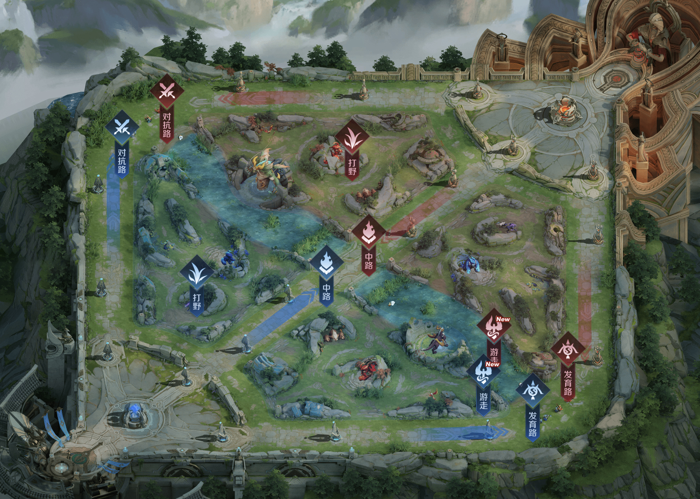
3.2.3 BP系统的博弈设计
| BP环节 | 设计机制与规则 | 驱动玩家行为 | 设计结果 |
|---|---|---|---|
| Ban阶段 | 双方各禁用3个英雄，共6个ban位。蓝方先ban。 | 玩家在三个方向上分配ban位：禁用版本强势英雄，防止对手拿到当前环境的超模选项；禁用自身预选打法的天敌，清除战术执行的最大障碍；禁用对手擅长英雄，直接削弱其个人战力。三种方向的优先级取决于玩家对版本格局和对手情报的掌握深度。 | 6个ban位在英雄池中制造出结构性空缺，双方围绕这些空缺展开阵容构建。一个ban位的作用不限于移除单个英雄——当一个体系的核心组件被移除时，该体系的其他英雄即使未被禁用，也因失去了联动支点而难以出场。ban位通过移除关键节点，间接瓦解了对方可能的多套战术方案。 |
| Pick阶段 | 蓝方先选1人，随后红方选2人、蓝方选2人、红方选2人、蓝方选2人、红方选1人（1-2-2-2-2-1），双方各选定5名英雄后进入对局。 | 先选方以首选暴露战术方向为代价，换取版本强势英雄的优先获取。后选方放弃对T0英雄的优先权，换取观察对方选择后再做针对性应对的信息窗口。每一轮选人均需在补强己方阵容与阻断对方体系之间做双重权衡——同一个英雄，可能既能完善己方战术拼图，又是对方战术链条的关键一环。 | 1-2-2-2-2-1的非对称顺序使双方在信息暴露程度与英雄获取优先权之间交替占据上风。红方末选拥有全局最后的选择权，承担补足阵容短板或针对对方核心的职能，是全队阵容逻辑的闭环收束。先手与后手各自支付不同的机会成本，规则层面不存在绝对优势方。 |
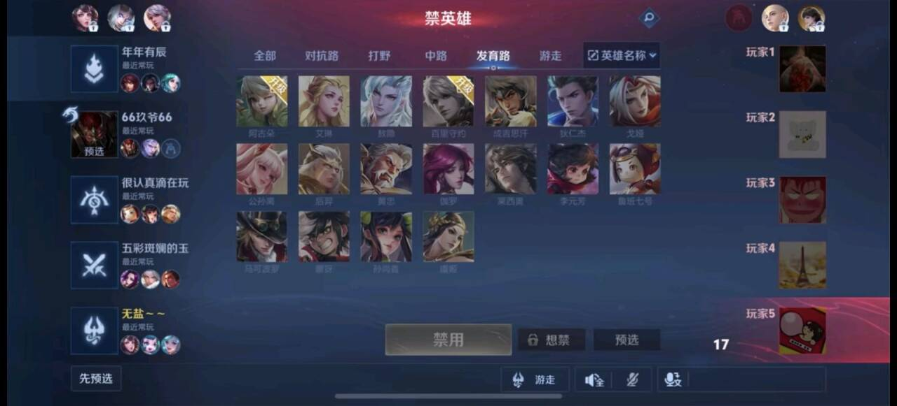
BP系统的有效性依托于多个核心系统的协同。英雄设计体系提供博弈的素材底座——120+英雄之间的克制关系网络越精细，ban/pick的决策空间越广阔；若英雄设计趋同，BP将退化为形式流程。段位体系将BP定位为竞技深度的分水岭——钻石以下采用盲选，胜负主要由操作水平驱动；达到钻石后解锁征召模式，操作与策略共同决定胜负，BP成为中度玩家向重度玩家过渡的体验门槛。赛事体系中，BP是职业比赛观赏性的独立组成部分——同样的两支队伍、同样的版本环境，不同场次的BP走向可导致截然不同的比赛内容，阵容结构的差异本身即构成叙事张力。临场BP调整能力由此成为区分顶尖选手与普通选手的关键维度——操作水平存在天赋上限，BP判断的准确度则只能通过对版本格局和对手数据的持续研究来积累。
BP系统对玩家体验的最终价值，在于它让"理解游戏"本身成为一种可感知的竞技能力。对普通玩家而言，BP提供了一种操作之外的胜负参与感——即使对局中的操作发挥不理想，一次精准的ban位选择或一次迫使对方阵容失衡的pick，已让玩家在进入对局前就为团队创造了优势。对赛事观众而言，BP环节将抽象的版本理解和战术博弈转化为可视的对抗——观众看到的不是选手在训练赛中的刻苦研究，而是两个团队在选人界面上的战术构想正面碰撞。BP将策略层面的差距摊开在双方和所有观众面前，让"谁更懂这个游戏"成为一个在加载界面就能被部分回答的问题，而不必等到水晶爆炸的瞬间。对局内的操作决定下限，BP的策略判断决定上限——这种双重评价体系，是王者荣耀作为竞技产品区别于纯操作型游戏的根本特征。
四、局外经济系统
王者荣耀的经济系统由五种货币、各自独立的获取和消耗循环、以及有限的货币间兑换通路构成。这套系统的基础设计原则是竞技公平性优先——付费不能影响对局内的战斗平衡。
4.1 五大货币体系
| 货币 | 类型 | 获取途径 | 主要消耗 | 设计定位 |
|---|---|---|---|---|
| 金币 | 免费货币 | 对局结算（与表现正相关）、日常任务、活动赠送 | 购买英雄、铭文抽取（已免费化） | 金币承载的是"对局参与→解锁英雄→继续参与"的行为循环：免费玩家通过持续对局积累金币购买新英雄，新英雄反过来驱动更多对局以熟练其操作。 金币的获取速率在设计上被精确校准——过快则英雄池快速耗尽导致玩家无事可做，过慢则目标过于遥远导致放弃积累。 其本质不是让玩家免费拿英雄，而是用持续的内容解锁预期来维系日常对局参与度。 |
| 钻石 | 免费货币 | 日常任务、签到、赛季结算、活动赠送 | 钻石夺宝（抽取皮肤/英雄碎片）、部分英雄购买 | 钻石的稀缺度介于金币和点券之间，设计意图是在纯免费玩家和付费玩家之间制造一个心理过渡区间。 钻石夺宝为免费玩家提供了接触付费级奖励（皮肤碎片）的随机通道——虽然获取概率有限，但"可能抽到好东西"的期待足以支撑日常任务的参与动力。 钻石的发放量被控制在"有希望但不够用"的水平，目的是让部分玩家在积累过程中逐渐接近付费决策的临界点。 |
| 点券 | 付费货币 | 充值（RMB 1:10） | 购买皮肤、英雄、战令进阶、积分夺宝 | 点券是人民币与游戏内一切内容的通用兑换媒介。 1:10的汇率将人民币转化为数字更大但面额更小的虚拟单位——60点券在心理感知上比6元更容易做出购买决定。 点券采用先充值后消费的设计，充值行为与消费行为分离，充值后账户中的点券余额持续产生"不用掉就浪费了"的心理暗示。 点券可购买任意内容，确保付费玩家的消费路径不存在货币层面的障碍。 |
| 荣耀积分 | 付费+少量免费 | 充值赠送为主，活动赠送少量 | 积分夺宝（抽取荣耀水晶） | 荣耀积分是货币体系中唯一引入高方差回报的设计——投入确定，产出不确定。 积分夺宝的核心驱动来自"小概率高回报"的博彩心理，大量玩家投入积分追逐极低概率的荣耀水晶，少数中奖者的可见结果成为维持其他玩家持续投入的证据。 免费活动赠送的少量积分本质上是行为入口而非福利——让从未参与夺宝的玩家以零成本体验抽奖的期待感，从而打开后续付费参与的可能性。 |
| 碎片 （皮肤/英雄） | 免费+付费混合 | 活动奖励、重复皮肤转化、战令（免费和进阶版均有） | 直接兑换皮肤/英雄 | 碎片与荣耀积分构成互补设计——荣耀积分提供不确定的博彩型消费，碎片提供确定的积累型消费。 对于免费玩家，碎片将一个模糊的愿望转化为精确的目标——"我想要这个皮肤"变成"攒到88个碎片就能换"，从没有时间表变成了有明确终点的进度条。 每天登录领取碎片奖励的日常行为，本质上是通过可见的进度累积来维系长期登录惯性。 |
4.2 免费与付费的隔离设计
王者荣耀作为免费竞技游戏，经济系统设计的核心矛盾在于商业收入依赖消费，但胜负必须由操作和策略决定。局外经济系统遵循的设计原则是付费价值的兑现在竞技公平性边界之外完成，主要通过以下三道隔离设计实现。
| 隔离设计 | 核心规则 | 设计意图 |
|---|---|---|
| 皮肤属性 限制 | 皮肤仅提供+10攻击力加成。一级英雄基础攻击力约170~200点，+10占比约5%；后期装备成型后攻击力800~1000+，占比降至1%以下。零氪玩家可通过活动获取伴生皮肤覆盖基础需求。 | 将皮肤的付费价值锁定在外观展示和收藏满足层面，数值影响被精确压至统计噪声级别。 +10攻击力的存在是刻意保留的信号——它承认付费行为应获得某种形式的回报，但刻意将幅度控制在不足以影响任何一场对局胜负归属的水平。 同时，伴生皮肤与付费皮肤之间的品质落差，在玩家对擅长的英雄产生情感归属后，转化为"我的绝活英雄应该有一款像样的皮肤"的心理驱动，推动首次消费破冰。首消一旦发生，后续消费的心理阻力将显著下降。 |
| 英雄金币 获取 | 全部英雄均可使用金币购买，无需消耗点券。新英雄上线初期支持点券首周折扣购买，之后回归正常金币价格（多数为13888或18888金币）。 | 付费与免费之间的差异被限定在时间维度而非内容维度——付费玩家获得抢先体验的时间窗口，免费玩家数周后同样可以通过积累的金币完成解锁。 零氪玩家在理论上可组建与付费玩家完全相同的英雄池，排位赛和巅峰赛的竞技起跑线在英雄可用性层面保持一致。 不付费不会永久失去使用任何一个英雄的资格。 |
| 铭文免费 化 | 2020年起所有铭文直接赠送并自动升至满级，新账号创建即获得与资深玩家完全相同的铭文配置。此前铭文需要消耗大量金币或点券抽取，曾是重要的养成付费点。 | 直接消除新老玩家之间的数值起跑线差异，新玩家注册后即可在基础属性上与任何段位的对手公平对抗，无需经历漫长的铭文积累期。 对于运营超过10年、需要持续吸纳新用户的产品，降低入门的隐性成本是维持玩家基数健康的前提条件。 牺牲铭文相关付费收入，换取更低的竞技参与门槛和更高的新玩家转化率。 |
4.3 皮肤分层定价策略
将皮肤划分为七个品质等级，本质上是在建立一套逐级递进的消费阶梯。七个层级从288点券到千元以上，每层之间保持"加一点就能升一级"的价格间距，且每层提供明确可感知的视觉增量：伴生更换外观，史诗开始改动技能特效，传说增加回城动画和动态封面，无双以上叠加社会性展示功能。玩家通常从低层级进入这套体系，碎片兑换伴生皮肤建立了"拥有皮肤"的初始认知，6元限定款以几乎为零的决策成本触发首次付费。此后每一级体验落差都构成向上迁移的推动力，大量玩家的消费记录呈现从伴生到史诗、从史诗到传说的清晰升级路径。这套分层机制实现了两个目标。其一，不同消费能力的玩家各自找到匹配的消费位置，轻度用户不会因门槛过高而放弃，重度用户不会因天花板过低而无处消费。其二，将一次性大额消费决策拆解为多次小额升级，每次升级的心理阻力远小于直接购买最高品质。皮肤商业化的持续性不依赖促销活动的短期刺激，而是靠品质阶梯本身推动玩家自发向上迁移。
| 品质层级 | 价格区间 | 主要消费群体 | 层级间的核心差异 |
|---|---|---|---|
| 伴生 | 288点券（约28元），可通过碎片兑换或活动免费获取 | 零氪用户、轻度付费用户 | 更换英雄的基础外观和配色，不涉及技能特效变化。 伴生皮肤的核心设计意图在于让不付费或低付费玩家也能获得+10攻击力的皮肤属性加成，缩小与付费玩家在数值层面本已微小的差距。 伴生皮肤客观上承担了"皮肤系统入门"的职能——让玩家在拥有第一个皮肤后，对更高品质皮肤产生可见的对比认知。 |
| 勇者 | 488点券（约49元）；6元限定为不定期活动专属 | 轻度付费用户 | 在伴生基础上增加轻微的模型细节调整，但仍不涉及技能特效改动。 6元限定款是不定期推出的活动皮肤，间隔周期通常为数月，核心功能是消费破冰——6元的极低价格使从未消费的玩家几乎没有决策成本，首次付费发生后，后续消费的心理阻力将显著下降。因其非持续性，6元皮肤不会形成"等6元就够了"的价格依赖。 |
| 史诗 | 888点券（约88元） | 主力付费用户 | 皮肤品质的分水岭。 史诗级开始全面更换技能特效配色和粒子表现——同一套技能组，在不同史诗皮肤下呈现完全不同的视觉风格。这是特效维度上的第一次质变，也是走量最大的品质层级。 对多数付费玩家而言，史诗皮肤是日常消费的主力选项——价格在可接受范围内，特效差异已足够显著。 |
| 传说 | 1688点券（约168元） | 中高端付费用户 | 在史诗的全部基础上增加三项独占内容：专属回城特效、动态半身像封面、以及完整的语音包重录。 回城特效是每局对局中皮肤"拥有感"最强的展示时刻——所有玩家都会看到你的回城动画。 动态封面则在加载界面和英雄展示页持续输出品质感知。 传说皮肤将皮肤的消费价值从"局内好看"扩展到"局内外都好看"。 |
| 珍品传说 | 抽奖获取，实际花费约200元 | 进阶付费用户 | 在传说品质基础上进一步提升特效密度和细节，但核心差异在于获取方式——从直接定价购买转为抽奖获取。 抽奖将消费决策从"值不值"的理性计算转化为"能不能抽到"的期待驱动，消除了直接标价时的价格敏感。 |
| 无双 | 抽奖获取，实际花费约400~500元 | 高端付费用户 | 独立品质标识在加载界面全员可见，所有玩家都能识别出这是一款无双皮肤。 与珍品传说相比，无双在特效的视觉冲击力上进一步提升，但真正的溢价来自加载界面的社会性展示——"让别人一眼认出"的功能由传说/珍品传说延伸到无双，辨识度达到最高等级。 |
| 荣耀典藏 | 积分夺宝获取，实际花费历史峰值约1500元（随活动波动） | 顶级付费用户、收集型玩家 | 全游戏最高规格的品质表现——独立模型骨骼、全套重制动画、专属语音、专属回城和阵亡特效。 荣耀典藏的设计目的不限于为其他品质做价格锚点，更核心的意图在于为消费意愿最强的顶层用户提供一个"终极目标"——在全英雄、全皮肤收集之后，仍然有值得追求的内容。 拥有一款荣耀典藏在加载界面的展示效果，是对顶级付费用户消费身份的最终确认。同时，其存在让全体玩家在积分夺宝中始终有一个"万一中了"的长期期待，维持积分夺宝的参与惯性。 |
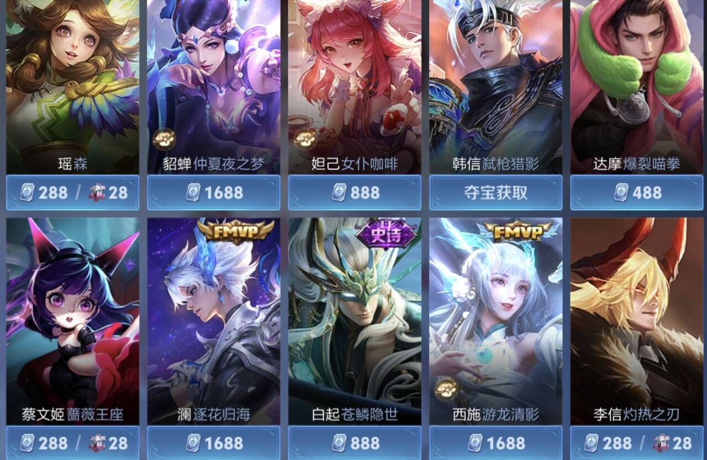
4.4 限时与稀缺性策略
限定皮肤仅在特定时期出售，包括春节、五五开黑节、周年庆以及外部IP联动等节点，时间窗口关闭后无法直接购买。限时机制的核心设计逻辑是制造"现在不买，以后就买不到了"的紧迫感——玩家面对的不再是"买不买"的选择题，而是"这次不买是否承受得了长期错过"的心理权衡。这种压力会比"这个值不值得买"的理性判断更快地推动消费决策。返场投票机制在限时的基础上叠加了第二层设计价值。首先，它让此前错过的玩家重新获得购买机会，这些玩家本身就是转化率最高的群体——他们已经想要这款皮肤很久了，唯一的问题是之前买不到。其次，返场窗口本身也是限时的，错过返场意味着再次进入未知的等待期，"这次再不买就真的没了"的压力比首次发售时更强。投票的本质功能是让运营方精确识别高需求皮肤并优先返场，将有限的返场排期分配给商业回报最高的选项。
五、英雄设计体系
5.1 六维职业分类
王者荣耀将120余名英雄划分为坦克、战士、刺客、法师、射手、辅助六个职业，覆盖了5v5对局中从伤害输出到伤害吸收、从先手开团到后排保护的完整职能分工。五个玩家、六个职业意味着阵容构建天然存在取舍，但六职业分类的根本目的在于为不同类型的玩家提供差异化的核心体验：偏好掌控战场的、偏好能抗能打的、偏好高风险秒杀的、偏好后期carry的、偏好幕后贡献的，都能找到适合自己的位置。一个玩家如果在六个职业中都找不到自己喜欢的体验，就不会留下来——这种"总有一个适合你"的覆盖面，是维持庞大用户基数的前提。以下从行为驱动和玩家体验两个层次对每个职业进行分析。
| 职业 | 数量（约） | 团队职能 | 核心特征 | 行为驱动与玩家体验 |
|---|---|---|---|---|
| 坦克 | 15~20名 | 吸收伤害、先手开团、保护后排输出 | 高血量和高防御成长，技能组以控制和减伤为主，输出能力偏低 | 驱动：坦克玩家站位靠前，主动吸收对方第一轮技能伤害，用控制技能决定"谁可以打、谁不能打"——一次精准的群体控制可以剥夺对方两到三名英雄的输出窗口。对方则必须绕开或越过坦克才能接触后排，绕开的路径本身就是一种阵型破坏。 玩家体验：核心爽感来自"掌控战场"——不是"我杀了谁"，而是"我决定了这波团谁能打、谁不能打"。从控制他人行为中获得满足，而非从击杀数据中获得满足。 |
| 战士 | 25~30名 | 前排持续输出，兼具一定承伤能力 | 属性均衡，具备切入技能和一定的自保能力，单挑和团战均有发挥空间 | 驱动：对线期在对抗路进行近身博弈——每一次换血都涉及对对方技能冷却和打野位置的判断。团战中面临核心决策：何时从侧翼切入对方后排？进场过早被集火秒杀，进场过晚队友已减员。对方前排必须在保护后排和压制战士之间做出取舍。 玩家体验：爽感来自"能抗能打"的自足感——既不需要像刺客那样赌完美进场、也不像射手那样依赖保护。战士玩家享受的是对线期通过换血建立优势、团战中找准时机切入后排并活着退出来的完整战斗体验。这种"打得进去、站得住脚"的扎实感，是战士区别于坦克（站得住但打不动人）和刺客（打得动人但站不住）的核心。 |
| 刺客 | 10~15名 | 快速切入敌方后排、秒杀核心输出 | 爆发伤害极高但身板脆弱，依赖技能连招和进场时机，容错率低 | 驱动：刺客玩家必须在团战中等待正确的进场时机——等对方控制技能交出、后排走位脱节的瞬间。决策窗口通常只有一到一个半技能冷却周期。对方后排则时刻警惕刺客位置，必须提前交位移或寻求辅助保护。 玩家体验：王者荣耀中情绪波动最极端的职业。成功秒杀对方核心输出后，在不到一秒内完成"进场→击杀→撤离"的流畅操作——这种潇洒飘逸的手法本身就是刺客玩家的核心追求。但进场即被秒的挫败感同样剧烈。高风险高回报的极端体验，是刺客区别于其他所有职业的本质特征。 |
| 法师 | 30~35名 | 法术伤害输出、范围控制、远程消耗 | 以技能伤害为主，普攻伤害偏低，多具备AOE和控制能力 | 驱动：清兵后获得一段"空闲时间窗口"，必须做出游走决策——支援边路、配合打野入侵、或继续压制中路。每次游走都是机会成本的选择：成功gank带来击杀收益，失败则损失中路兵线经济和防御塔血量。对方中单看到法师消失后需判断其去向，对方边路必须时刻留意中路是否来人。 玩家体验：爽感来自"全场节奏由我发起"的掌控感。技能形态差异最大——弹道速度、范围、延迟的组合使每个法师的操作手感截然不同，技能命中精准度直接转化为团战胜负。一套技能精准命中的满足感，是法师玩家最核心的体验。 |
| 射手 | 15~20名 | 团队核心物理输出、推塔主力 | 攻速和暴击成长极高，后期是全队最强持续输出，但前期极脆弱 | 驱动：前期隐忍发育，依赖辅助保护和优先吃经济，站位靠后——任何走位失误都可能导致被击杀，此时射手的核心行为是"活下去"。后期装备成型后角色逆转：射手从"被保护的对象"转变为"团队输出的核心引擎"，主动寻找安全输出站位，用全队最高的持续伤害收割团战、推掉防御塔，成为全队推进节奏的发动机。对方全队则以击杀射手为第一优先级——团战的攻防结构围绕射手的生存与输出展开。 玩家体验：爽感来自"投资→回报"的成长曲线。前期忍耐弱势、专注发育，后期成为全队最高输出——从"被保护的对象"成长为"决定团战胜负的人"。一次团战中存活到最后并完成收割，是最核心的心理回报。这种"前期隐忍→后期主宰"的体验，是六职业中最具延迟满足特征的。 |
| 辅助 | 10~15名 | 保护核心输出、提供视野、控制敌人 | 不依赖装备即可发挥功能，技能以保护、控制和团队增益为主 | 驱动：辅助不需要将时间分配给刷经济和补兵，因此可以将全部精力投入到三件事上——保护己方核心输出、游走提供关键视野和节奏、在团战中用控制技能先手开团或后手打断对方关键技能。一个关键控制按对了，即使自身零击杀零输出，对团战的贡献可能超过全队任何人。对方刺客和战士必须首先处理辅助的控制，否则无法接近己方后排。 玩家体验：爽感来自"我让队友变强了"。其他五个职业的体验核心都是"我变强了"，辅助的体验核心是"我的存在让队友发挥得更好了"。一次关键的护盾挡住致命伤害，一次精准的控制先手开团或打断对方关键技能，一次及时的视野照亮关键区域——虽然没有击杀提示，但队友活下来了、团战打赢了。这种幕后贡献的成就感，天然吸引偏好协作而非个人秀的玩家群体。 |
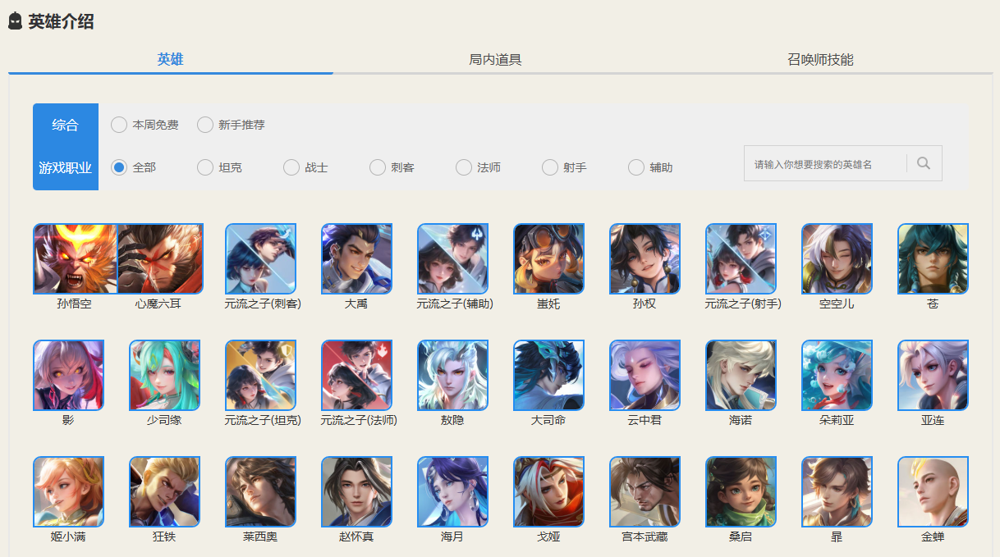
5.2 英雄设计的差异化维度
王者荣耀的英雄设计可以从三个维度来理解：核心机制辨识度决定这个英雄玩起来有什么不一样，上手难度分层决定这个英雄适合谁玩，情感连接构建决定玩家为什么对这个英雄产生认同。三个维度覆盖了玩法、成长、情感三个层面。
| 维度 | 系统实现方式 | 行为驱动 | 玩家心理体验 |
|---|---|---|---|
| 核心机制 辨识度 | 王者荣耀所有英雄共享同一套底层系统——移动、攻击、技能释放、生命值与法力值、死亡与复活。核心机制的差异化通过对现有系统进行组合或规则修改来实现：系统间联动将移速与伤害挂钩产生关羽的冲锋机制，资源系统替换用能量替代法力值控制技能释放节奏。两种手段的本质都是在共享系统之上创建例外规则。此外，英雄的技能组内部存在设计逻辑——以关羽为例，被动技能依赖移速积累冲锋状态，一技能和二技能在冲锋状态下效果增强，大招提供爆发性移速快速进入冲锋状态。四个技能共同服务于维持移速这一核心操作目标，技能之间不是孤立的释放动作，而是一个相互强化的行为闭环。 | 驱动玩家在英雄池中进行有目的的筛选——不是比较数值强弱，而是比较操作节奏是否与自身偏好契合。玩家尝试不同英雄的过程本质上是在回答一个问题：这个英雄的操作手感对吗？当某个英雄的技能释放节奏、位移方式、输出循环与玩家的操作直觉高度一致时，就会产生持续投入的意愿。这种筛选行为不是一次性的——随着操作水平提升和偏好变化，本命英雄也可能发生迁移。同时，理解不同英雄的机制逻辑也驱动玩家在对局中进行有针对性的反制：知道对手的机制依赖什么，就知道用什么手段去打断它。 | 落在操作偏好的兑现与操作满足感的叠加。每个玩家都有自己偏好的操作方式——有人偏好持续移动中寻找机会，有人偏好精准预判后一击必中，有人偏好多段位移中反复拉扯。核心机制辨识度让不同类型的操作偏好都能在英雄池中找到对应的出口，当玩家的操作直觉与英雄的核心机制高度契合时，每一个技能释放都符合自己的操作节奏，操作本身从负担变为享受——这种对胃口的感觉是本命英雄现象背后的心理本质。在此基础上，英雄技能之间的自洽逻辑进一步带来操作满足感：掌握了完整的行为闭环后，操作不再是逐个按下技能而是连贯流畅的行为流，这种行云流水的体验是机制辨识度带来的最深层的玩法乐趣。 |
| 上手难度 分层 | 难度分层通过三个设计参数控制。技能操作复杂度：从指向性技能到非指向性预判再到多段连招的节奏要求。容错空间：从高血量配合位移保命到零自保，失误代价逐步增大。决策密度：取决于技能之间的释放条件与时机要求——技能之间是否存在严格的释放顺序、是否需要在特定窗口做出非此即彼的抉择、技能空档期是否容易被对手利用。决策密度越高的英雄，单位时间内需要做出的判断越多。三个参数的取值组合决定了英雄的难度区间，绝大多数英雄被控制在中等取值以匹配活跃用户最集中的难度带。 | 驱动不同操作水平的玩家都能找到适合自己的英雄——新手从极简英雄入门获得正向反馈，硬核玩家在困难英雄上追求操作上限。难度阶梯为玩家提供自然的成长标尺：从能玩到熟练到精通，每个阶段都有匹配的挑战。同时，简单英雄的存在意味着即使不追求高难度挑战的玩家，也能在不投入大量练习的情况下获得完整的核心对战体验。 | 落在成长感与包容性的并存。追求挑战的玩家在难度阶梯上获得可感知的进步——从我能行到这个英雄我吃透了，每一级台阶都是具体可感的成就。不追求挑战的玩家在简单英雄上同样获得完整的5v5竞技体验——操作的简化不等于体验的降级，低门槛英雄在团战中的先手开团和后排保护带来的竞技满足感并不亚于高难度英雄。难度分层的最终目的不是筛选玩家，而是让不同操作水平的玩家都能在对局中找到属于自己的高光时刻。 |
| 情感连接 构建 | 情感连接通过叙事、听觉、视觉三个设计层实现。叙事层为每个英雄构建背景故事、阵营归属、与其他英雄的关系网络，新英雄上线时与已有英雄产生故事交叉，形成持续扩展的角色关系网络。听觉层在出场、击杀、死亡等情绪高敏节点配置反映角色性格的专属语音。视觉层通过皮肤系统为同一英雄提供多套独立的美术设定，每套皮肤呈现该英雄的不同人格侧面。 | 核心驱动是身份认同——玩家通过英雄在社交中表达自我标签，我是玩李白的在玩家社群中是一种有意义的身份符号。在此基础上驱动付费意愿和持续关注：为喜欢的角色投入金钱和注意力，英雄从对局工具升级为持续追踪的角色IP。 | 落在代入感与自我认同的融合。玩家不是在操作一个英雄，而是在扮演一个角色——每一次对局不只是释放技能组合，而是以这个角色的身份参与战斗，击杀和胜利的情绪强度因此被放大。更深层的体验是自我认同：当玩家长期使用一个英雄后，这个英雄成为玩家在游戏世界中的化身，不是我在玩王者荣耀而是我是玩某某的。这种超越玩法本身的情感绑定，是玩家长期留存和主动向他人推荐的最强驱动力——玩法可以被竞品复制，但玩家与特定角色之间的情感连接无法被复制。 |
5.3 平衡性调整的实际运作
120余名英雄的平衡性调整是一个持续动态的过程，分为三个层面：数值调整（最为频繁，微调为主）、机制调整（涉及核心玩法改动，决策更为审慎）、赛季级大版本调整（约每3个月一次，系统性校准）。三个层面从微观到宏观，共同构成王者荣耀的平衡性运作体系。
| 调整层面 | 系统实现 | 行为驱动 | 玩家体验 |
|---|---|---|---|
| 数值调整 | 调整英雄的基础属性成长曲线（生命值、攻击力、防御每级成长）、技能数值（基础伤害、伤害加成系数、冷却时间、法力消耗）、装备数值（价格、属性、被动效果）。调整依据来自分段胜率、出场率、Ban率的综合数据分析：低段位过强通常意味着基础数值偏高，降低基础值；高段位过强通常意味着技能加成系数过高，调整系数而非基础值，避免波及低段位玩家。同时参考英雄在不同段位、不同对局时长下的表现曲线，判断问题出在前中后期的哪一个阶段，进行对症的数值修正。 | 驱动玩家关注每次更新内容，评估自己常用英雄的强度变化，据此调整主力英雄选择和出装路线。驱动玩家尝试被加强的英雄——数值提升降低了尝试新英雄的门槛，客观上推动玩家扩大英雄池。被削弱的英雄则促使玩家寻找替代选择，推动了英雄使用率的流动和阵容多样性的提升。 | 频繁的数值微调持续注入新鲜感——每次更新都意味着版本环境发生了微小变化，玩家在适应变化的过程中获得持续的探索乐趣。数值调整的方向是让对局更加公平——过强的被回调、过弱的被补强，公平性每提升一点，玩家的竞技体验就改善一点。使用率的流动也让玩家有理由走出舒适区，尝试此前不熟悉的英雄和打法，在客观上扩展了游戏体验的广度。 |
| 机制调整 | 调整英雄技能的交互规则——增加或移除技能效果（如添加一段位移、移除一个控制效果）、修改技能判定条件（命中范围、锁定逻辑、弹道速度）、调整技能之间的衔接关系（取消后摇、改变连招顺序）。机制调整涉及英雄核心玩法的改动，影响面广于数值调整，因此决策更为审慎，调整频率自然较低。触发条件不只是英雄表现过弱——当英雄过强且数值回调无法解决时（问题出在机制而非数值）、当英雄在职业赛场与路人局的表现差距过大时（机制上限与普通玩家不匹配）、当英雄的技能组存在结构性缺陷时（技能之间缺乏逻辑关联），都需要通过机制调整来解决。调整依据包括分段数据、玩家社区反馈和职业赛场表现。 | 驱动玩家重新学习和适应调整后的技能逻辑——机制改动意味着此前积累的操作经验部分失效，需要重新投入时间理解英雄的玩法。驱动玩家研究新的阵容组合和克制关系——一个英雄的机制调整会引发连锁反应，依赖该英雄的阵容体系需要重新评估，克制该英雄的策略也可能随之变化。 | 机制调整直接提升了对局的公平性——结构性问题的修复让英雄的强度更加合理，减少了因机制设计缺陷导致的极端体验。同时，机制更新为游戏注入新的战术变量——调整后的英雄可能催生出此前不存在的阵容组合和打法思路，丰富了整体的竞技生态。对于长期关注该英雄的玩家而言，机制重做让一个已经熟悉的英雄重新具有探索价值，这种失而复得的新鲜感是数值微调无法提供的。 |
| 赛季级大 版本调整 | 每个赛季（约3个月）进行一次系统性调整——涉及地图改动（野区布局、防御塔属性、兵线机制）、装备体系更新（新增装备、旧装备重做、装备数值统一调整）、多名英雄的数值和机制同步修改。赛季级调整的功能不仅是解决公平性问题，更是对整个竞技体系的系统性校准——地图、装备、英雄三者相互关联，任何一个环节的单独调整都可能打破整体平衡，因此需要以赛季为周期进行同步更新，确保竞技生态作为一个完整系统持续运转。这也是王者荣耀作为竞技游戏的底层维护逻辑：不是修修补补，而是周期性系统性校准。 | 驱动玩家在新赛季初期重新探索版本环境——新的装备体系和英雄调整意味着上赛季的经验部分失效，玩家需要重新寻找版本强势英雄和最优出装路线。赛季重置配合大版本调整，让所有玩家重新进入探索期，在排位中验证自己的版本理解。 | 赛季级调整的核心体验是焕然一新——地图、装备、英雄的同步更新让游戏在短时间内面貌大变，即使核心玩法不变，玩家仍然获得强烈的探索欲望。这种周期性的新鲜感注入是维持长期留存的关键机制：玩家不是因为游戏不公平而流失，而是因为游戏不再新鲜而流失。同时，系统性校准让竞技生态更加完整和自洽——地图改动与英雄调整同步进行、装备更新与数值调整相互配合，使整个游戏的竞技逻辑更加严密，这是碎片化的每周微调无法实现的整体性优化。 |
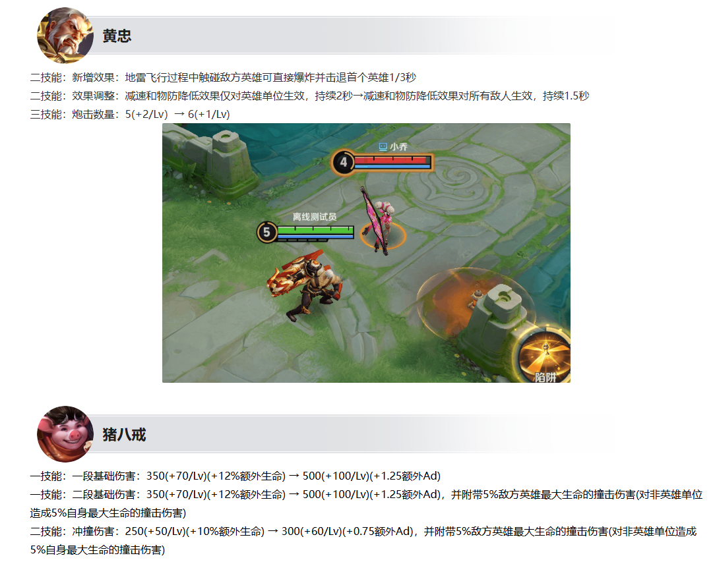
六、段位竞技与匹配机制
6.1 段位体系的激励设计
段位从低到高为：青铜→白银→黄金→铂金→钻石→星耀→最强王者→传奇王者（100星以上为最高段位）。王者段位以上按星数细分：0-9星入门、10-19至圣、20-29无双、30-39非凡、40-49绝世、50-99荣耀王者、100星+传奇王者。段位体系本质上是一套将玩家水平转化为持续行为动力的激励架构——衡量水平是表层功能，驱动长期参与是底层目的。以下从三个核心设计机制拆解其运作逻辑。
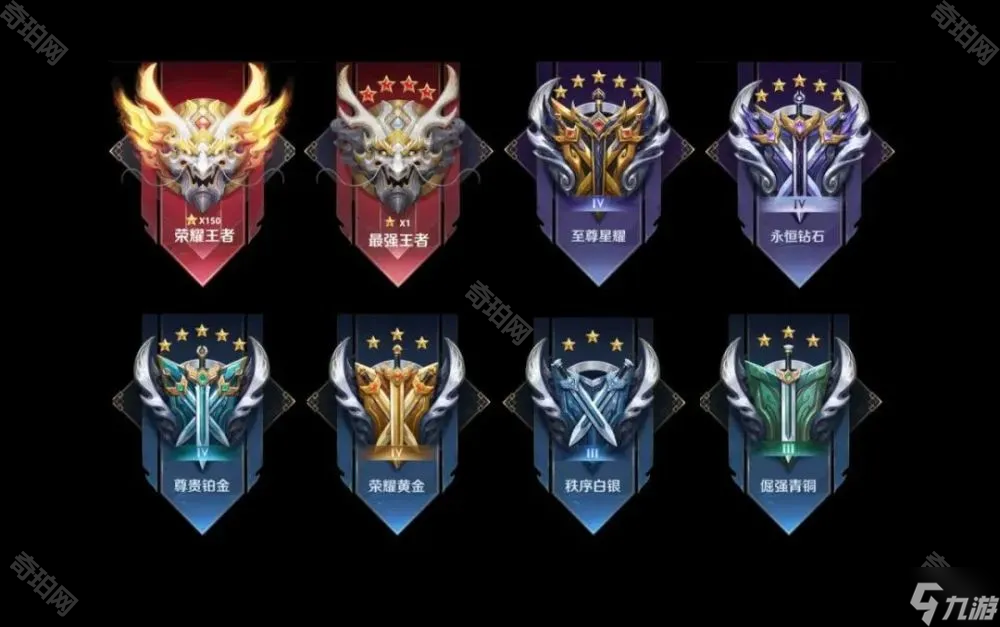
| 设计机制 | 系统实现 | 行为驱动 | 玩家体验 |
|---|---|---|---|
| 段位阶梯 结构 | 八个大段位构成从新手到顶尖的完整晋升通道。每个大段位下设若干小段位，每个小段位需积累一定星数方可晋级——胜利加星、失败扣星。段位越高，晋升所需星数越多，晋级难度递增。王者段位以上按星数增设多档细分称号，在最高段位内部继续划分等级。整个阶梯结构对所有玩家统一适用，段位升降仅由对局胜负决定。 | 驱动玩家将段位作为自我能力的量化标尺——不是"我觉得自己玩得好"，而是"我是钻石段位"，段位提供了可比较、可展示的能力证明。驱动玩家持续排位以追求段位提升——每颗星的得失让每局比赛都有明确的进度意义，而非赢了只是一局、输了也只是一局。段位阶梯的可视化让目标路径一目了然：从当前段位到目标段位还差几颗星、还需要多少场净胜，玩家可以精确估算自己的进度。 | 落在持续的进步感知。每颗星的获取都是即时的正向反馈——不是打完一个赛季才知道自己进步了，而是每赢一局都能看到段位在向上移动。每跨越一个大段位则是里程碑式的成就，将竞技游戏中天然存在的胜负波动转化为一个长期的、方向明确的成长叙事。王者段位以上的多档细分解决了顶端玩家的目标真空——即使上了王者，还有荣耀王者、传奇王者在前面，进步的叙事在任何水平段都不会中断。 |
| 保星与 勇者积分 | 晋级赛失败时不消耗星星，玩家保留在当前段位并可立即再次尝试晋级。勇者积分通过对局累积，无论胜负均可获得，积分满额后自动抵扣一次失败扣星。对局中获得金牌或银牌评价（基于KDA、参团率、输出或承伤等综合数据判定）可额外获得勇者积分加成。以上机制不改变对局胜负结果，仅调整段位星数的变动规则。 | 驱动玩家在晋级失败后立即重新排位——不扣星意味着"就差一点"未被系统惩罚，再来一局的冲动得以保留而非被挫败感覆盖。勇者积分的累积驱动玩家持续排位——即使当前输了，积分也在增长，玩家不需要以完美胜率来维持段位进度。金牌奖励额外积分驱动玩家在逆风局中保持积极表现——输了也可能因个人数据优异而减少段位损失，不会产生"反正要输了不如放弃"的心态。 | 落在挫败感的缓冲与"再来一局"的驱动力。竞技游戏最大的流失节点不是连败本身，而是差一点成功后的挫败——晋级赛输了、差一颗星上段、被队友坑了。保星和勇者积分在这些高危流失节点上设置了缓冲垫，将原本可能转化为退出冲动的挫败感保留为继续排位的动力。同时，勇者积分的累积机制让每一次对局都有正向积累——胜利加星、失败也可能加积分，玩家始终能感知到进度在向前推进而非原地踏步。 |
| 赛季重置 | 每个赛季持续约3个月，赛季结束后所有玩家的段位按当前段位统一回退一定幅度（通常约回退一个大段位），新赛季开始后重新进行定位。段位回退规则对所有玩家统一适用，不因上赛季表现差异而区别对待。赛季结束后，上赛季达到的最高段位永久记录在玩家个人档案中，作为历史成绩保留。 | 驱动玩家在赛季末产生紧迫感——必须在重置前冲击目标段位，赛季最后几天的排位活跃度显著高于平时。驱动玩家在赛季初集中回归——新赛季重置让所有玩家重新进入爬升期，排位池重新活跃。赛季周期还驱动玩家形成习惯性的参与节奏：爬升→达成→等待重置→重新爬升，构成一个完整的年度行为循环。赛季末的冲刺与赛季初的回归共同维持了排位系统的周期性活跃。 | 落在周期性重启的新鲜感与重新证明自己的机会。赛季重置为排位提供阶段性的完结和重启——上个赛季的成绩已定格为永久记录，新赛季是全新的开始，此前不理想的赛季表现不再构成心理负担。同时，赛季重置让段位的获取具有了时间稀缺性——必须在赛季结束前达到目标段位才能在个人档案中永久记录，这种"过期不候"的约束进一步强化了赛季末的参与驱动力。排位因此从一条看不到尽头的单行道，转变为一个可以反复经历、每次都有不同目标的环形跑道。 |
6.2 巅峰赛与英雄战力
排位赛解决的是大多数玩家的竞技验证需求，但对于王者段位以上的硬核玩家，段位本身存在两个结构性问题：一是段位有上限（传奇王者100星以上不再细分），顶端玩家的竞争缺乏继续向上的空间；二是排位允许组队，段位的高低可能受到队友水平的影响，不能完全反映个人实力。巅峰赛和英雄战力分别针对这两个问题——巅峰赛提供无限竞争空间和纯单人实力排名，英雄战力提供单个英雄的专精度认可。
| 设计机制 | 系统实现 | 行为驱动 | 玩家体验 |
|---|---|---|---|
| 巅峰赛 | 王者段位以上玩家可参与，仅允许单排，使用独立的巅峰分数替代段位星数作为排名依据——每场对局根据胜负和表现增减具体分数，而非星数的整颗变动，排名精度远高于段位体系。巅峰分数排名全服公开，玩家可查看自己在全国的具体排名位置以及与前后的分差。匹配仅基于巅峰分数，不与排位段位挂钩。每赛季重置至起始分，巅峰分数理论上不封顶。 | 驱动王者段位以上的硬核玩家将竞技重心从排位赛转移到巅峰赛——段位到达王者后继续排位的边际动力递减，而巅峰分数提供了无限的上升空间。单排机制驱动玩家以个人综合实力而非组队配合来获取排名——巅峰分数因此被视为比段位更纯粹的实力证明。单排环境下阵容不确定性更高，驱动玩家在多个位置和英雄之间具备更全面的适应能力，而非仅依赖固定的组队体系和位置分工。 | 落在实力验证的精确感与排位竞争的具体感。排位允许组队，段位可能受队友水平的影响；巅峰赛强制单排，每一分都是个人决策和操作的直接反映。巅峰分数的数值精度远高于段位星数——星数只有几十个级别，巅峰分数有上千个级别，每局的加减分都是可感知的进步或退步。全服公开排名让竞争变得具体：玩家看到的不仅是自己的分数，还有与前后排名的分差，超越前面的人是一个明确且可量化的短期目标。排位告诉你"你是王者"，巅峰赛告诉你"你是全国第几"——后者带来的确切排名感，是巅峰赛相对于排位赛最核心的体验差异。 |
| 英雄战力 | 每个英雄独立计算战力值，综合该英雄在排位赛和巅峰赛中的胜率、表现评分、对局数据。按战力值进行全国排名（国服最强前十名）、省级排名、市级排名，排名称号加载在个人档案中并在对局加载界面展示给全队。每赛季按比例衰减战力值，需要持续使用该英雄并保持高水准表现来维持排名。战力值的计算同时依赖排位段位和巅峰分数——高段位和高巅峰分是获得高战力的前提。 | 驱动玩家对特定英雄进行深度专精——不是泛泛地会玩多个英雄，而是在一个英雄上投入数百甚至上千场对局以达到全国顶尖水平。驱动玩家在使用该英雄时追求极致表现——不仅是赢，还要打出高评分的数据（高KDA、高输出或承伤占比）来最大化战力增长。驱动玩家之间形成以单个英雄为单位的竞争社群——同一个英雄的专精玩家互相比较战力排名和操作水平，形成超越段位竞争的新型竞技关系。 | 落在专精身份的公开认可与不进则退的持续驱动力。国服最强的称号在每次对局的加载界面展示给全队——这不是只有自己知道的成就，而是每进入一局游戏都被全队看见的身份标签。称号本身构成一种持续性的竞技压力：既然挂着国服最强的标，就不能在比赛中打出低于这个称号的表现——这种压力不是系统施加的惩罚，而是玩家对自己身份的本能维护。省级和市级排名降低了认可门槛，让更多玩家在更小的地域范围内获得排名荣誉——全省前十的称号在自己的社交圈内具有同等的分量。战力值的赛季衰减意味着排名不是永久性的：上个赛季的国服最强这个赛季可能掉出前十，维持排名需要每个赛季持续投入，这种不进则退的机制将一次性的成就转化为持续性的竞技承诺。 |
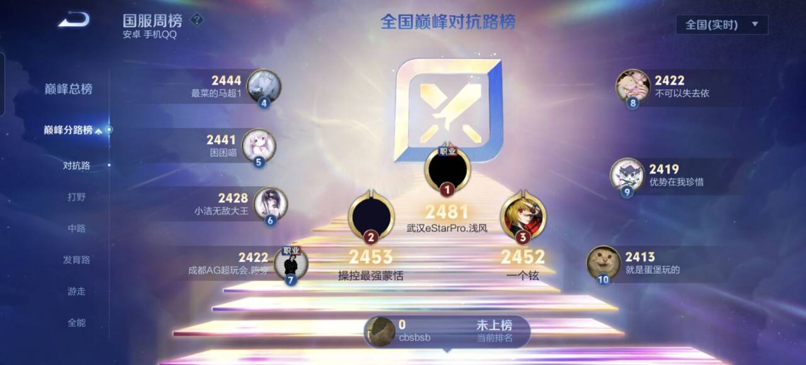
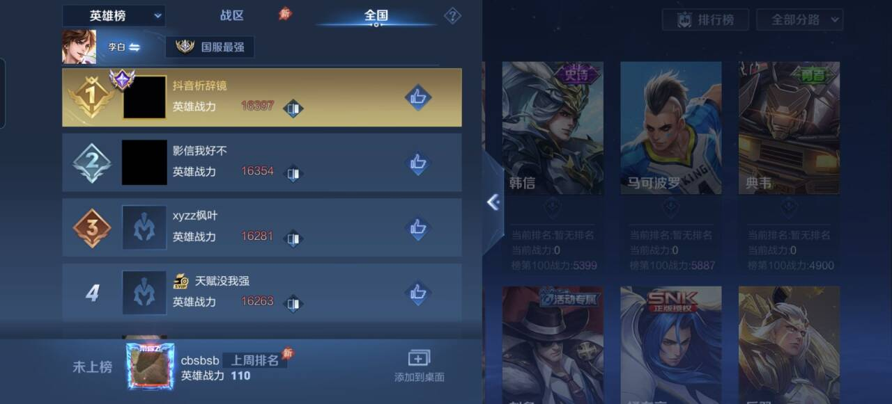
6.3 ELO匹配机制
匹配机制决定每位玩家在每一局中遇到谁。王者荣耀使用隐藏分（MMR）作为匹配依据，通过ELO算法动态调整MMR以估算玩家当前的真实实力，并在匹配时使双方队伍实力接近。匹配赛、排位赛、巅峰赛各自维护独立的MMR体系，底层算法相同，核心差异在于MMR的透明度。
| 层面 | 内容 |
|---|---|
| 系统实现 | 每位玩家拥有一项不公开的MMR值。匹配前，系统根据双方队伍的平均MMR差计算本局预期胜率。对局结束后，根据实际胜负与预期的偏差修正MMR：以弱胜强时加分幅度最大，以强输弱时扣分幅度最大，反之幅度收窄。匹配执行时，系统在当前玩家MMR的邻近范围内搜索排队玩家，使双方队伍平均MMR尽可能接近，同时满足每人至少两个预设位置的分配约束。MMR在长期上引导胜率向50%收敛——当胜率持续高于50%，MMR不断上升，匹配到的对手逐渐增强，胜率自然回落至均衡水平。匹配赛MMR完全不公开且不计段位得失，排位赛段位公开而MMR隐藏，巅峰赛以巅峰分数直接作为匹配依据。 |
| 行为驱动 | ELO通过调整队伍配置而非仅调整对手强度来影响玩家的胜负体验，由此产生的行为驱动不同于普通的输赢情绪。连胜时，系统不仅匹配更强的对手，同时将MMR较低的队友分配至己方——玩家面对的是对手增强和队友弱化的双重压力。这种配置下败局的责任天然向外分散：输是因为队友差距，而非自身失误。由此产生的外部归因降低了失败对自信心的冲击，减少了因自我否定而退出游戏的概率。连败时同理反向运行：对手强度下降的同时队友质量上升，胜利的归属向内集中——玩家更容易将胜利归因于自身发挥。两种方向的归因偏移共同指向同一结果：当局结束不是停止点，因为上一局的结果被解释为外部因素或自身状态的暂时波动，而非自身实力的真实反映，需要下一局来确认。 |
| 玩家体验 | 从游戏设计角度看，ELO的正面效果是显著延长了单次游戏时段的局数。连胜时，对手增强与队友弱化共同制造递增的挑战，避免连胜过于轻松导致的兴趣衰减。连败时，对手减弱与队友增强共同提供缓冲，避免连败累积导致的挫败性退出。两种调节共同维持了玩家在合理情绪区间内的持续参与。负面效果集中在排位赛的信息不对称上：段位公开而MMR隐藏，使ELO的调节行为在玩家眼中呈现为一种不可验证的刻意安排。连胜时发现队友越来越弱、对手越来越强，产生"系统在让我带别人"的体验；连败时即使开始赢，也因为对手明显变弱而降低了胜利的成就感——"赢了也不是我厉害，是系统安排的"。段位作为实力标签的可信度在这种反复中被持续消解，胜负与自身实力的关联感弱化，参与感随之降低。巅峰赛通过将匹配依据与公开分数合二为一回避了这一问题——匹配逻辑透明化后，玩家的归因从外部回归内部。 |
七、社交系统
社交系统是维持长期留存的核心引擎——对局体验驱动单次参与，社交关系驱动持续回归。王者荣耀的社交功能覆盖了好友连接、群体组织、关系深化三个层面，以下逐一拆解各功能的系统实现、行为驱动与玩家体验。
7.1 社交功能拆解
| 社交功能 | 系统实现 | 行为驱动 | 玩家体验 |
|---|---|---|---|
| 好友体系 | 好友来源分为三类：微信好友与QQ好友自动导入，无需手动添加；通过玩家ID或昵称搜索添加；对局结束后向队友或对手发送申请添加。 添加好友时可使用筛选条件：段位、活跃时段、安卓/iOS平台、性别、同城等，在搜索结果中定位符合特定条件的玩家。 关注与粉丝为单向关系，关注不需要对方同意，无需成为好友即可查看对方动态。 好友列表中展示在线状态、段位、当前对局状态。好友之间可互赠金币、使用道具提升亲密度。赠送皮肤与英雄通过游戏内赠礼系统完成，与亲密度系统关联——赠礼同时提升双方亲密度。索要功能允许玩家向好友发起皮肤或英雄的索要请求，对方确认后完成赠予。 辅助连接功能包括：最近一起游戏列表，自动记录近期共同对局的玩家；附近的人，基于设备位置展示周边玩家并支持发起组队邀请；找朋友，按活跃时段、常用位置等条件匹配潜在新好友。 | 微信/QQ自动导入驱动玩家登录即拥有完整好友列表，无需从零建立社交关系。 筛选功能驱动玩家按自身需求定位新好友：设置段位和同城条件后，搜索结果直接呈现符合条件的玩家，社交扩展从随机浏览变为定向搜索。 关注/粉丝的单向机制驱动高手积累粉丝、普通玩家关注高手——关注行为零成本，无需对方确认。 赠礼与索要将馈赠行为内置于游戏系统而非依赖外部支付工具，驱动好友之间以非金钱方式进行资源互惠——送出皮肤同时表达友好和建立关系权重；索要则将开口要的心理负担从个人转移至系统功能。 最近一起游戏驱动赛后即时添加配合默契的队友；附近的人驱动基于地缘的社交好奇；找朋友驱动主动扩展陌生社交圈。 | 好友体系的核心价值在于将社交连接的门槛降至最低，使社交关系成为驱动玩家持续登录的核心动力。微信与QQ好友自动导入并公开展示在线状态，驱动玩家主动发起组队邀请；附近的人、最近一起游戏和筛选功能拓展了基于场景与条件的社交连接。 赠礼系统使馈赠内置于游戏，避免了外部支付的不便与金钱往来的尴尬，降低了送礼的门槛；索要功能将开口索求的心理成本转移至系统——两者的共同效果是促进了好友之间的资源互惠，使社交关系持续保持活跃。 |
| 车队 | 车队是介于临时组队与正式战队之间的中型社交单元，成员无需互相邀请即可直接加入对方的组队房间。车队内部设有独立聊天频道，成员在日常非组队时段仍可保持交流。车队成员之间可共享特定的免费皮肤使用权。 | 免邀请上车驱动成员在看到车队有人组队时直接加入，跳过邀请和等待响应的社交环节。 独立聊天频道驱动车队在组队功能之外维持日常交流。 免费皮肤共享驱动玩家为获取使用权而加入并保持活跃。 | 免邀请进入使组队的心理启动成本从"发起社交请求"降低为"点击进入"，促进了车队内部自发、高频的组队行为，使车队成为一种让人感到放松的熟人圈子。 独立聊天频道中持续滚动的消息使成员感知到群体的活跃状态，维持了非组队时段的归属感，降低了成员沉默流失的概率。 共享皮肤的获得方式基于归属而非购买，使成员对车队身份产生价值认同，增强了车队的凝聚力与留存意愿。 |
| 亲密关系与友情重燃 | 亲密关系：两名好友可绑定关系标签（恋人、基友、闺蜜、死党），绑定后关系图标在对局加载界面和好友列表中公开展示。亲密度通过互赠金币、使用道具、共同组队等方式累积，亲密度等级影响关系图标的视觉效果。 友情重燃：与好友共同完成指定对局任务获得友情币，友情币可兑换英雄碎片、皮肤碎片、皮肤礼包、排位保护卡等。 | 关系标签的四种类型覆盖了现实社交中最核心的情感连接模式，绑定关系本身成为好友互动的目标终点。 亲密度等级驱动绑定双方保持高频互动：送金币、送道具、一起组队，这些重复行为因为进度条的存在而有了累积方向。 关系图标的公开显示驱动玩家为维护标签的真实性而持续与绑定好友互动。 友情重燃的任务与奖励驱动玩家与旧友重新组队完成指定对局。 | 关系图标在加载界面向全队九人公开显示，将私人关系转化为公开的社交身份——绑定关系从私下约定升格为被系统认证的社交事实，增强了关系双方维护这段关系的责任感与持续互动的意愿。 亲密度的每次增长以可见进度条量化了关系在游戏中的分量，使双方对关系的投入有了客观的累积感，从而强化了持续维护亲密关系的动力。 友情重燃为长期未联系的好友提供了无需解释沉默的重新接触理由——任务本身就是台阶，降低了重启已沉淀关系的社交成本，使旧有关系得以重新活跃。同时，奖励机制为已流失或半流失的玩家提供了回归游戏的轻度理由，促进了整体社交氛围的活跃。 |
| 师徒 | 高段位玩家可收低段位玩家为徒弟，出师前每位师傅可同时带多名徒弟。徒弟完成指定任务后双方获得师徒积分，师傅积分累积为名师等级，不同等级解锁皮肤和头像框奖励。徒弟完成全部任务后出师，师徒关系保留但不再产生任务奖励。 | 名师等级的皮肤奖励驱动高段位玩家主动寻找新手提供指导。 徒弟端的任务列表驱动新手按结构化路径熟悉各类游戏内容。 出师后关系保留驱动双方在任务激励结束后仍然维持联系。 | 师徒系统降低了新玩家的入门门槛——新手期的迷茫被一个具体的人接手，遇到问题直接向师傅询问，降低了学习成本与独自试错的挫败感，使新玩家更容易度过新手期并留下来。 对师傅而言，徒弟从不会玩到能独立操作的成长过程带来的满足感，构成了持续收徒和指导的核心动力，使师徒关系在任务奖励之外产生真实的情感连接。 出师后关系保留使这段经历不会因任务完成而被抹去，师徒关系转化为游戏社交网络中的长期连接，增强了双方的留存黏性。 |
| 战队 | 战队上限150人，设有队长、副队长等管理层级，可自定义名称、图标、公告。战队赛每周固定时段开放，成员组队参与获得战队积分，积分决定战队排名和赛季奖励。内部设有独立聊天频道、招募公告和成员管理功能。 | 150人容量确保固定赛事时段总能凑够足够的组队人数。 管理层级驱动核心成员承担组织角色：队长安排赛程、副队长管理日常、活跃成员带动氛围。 固定时段和积分排名共同驱动成员形成规律性的参与习惯。 | 战队标识将对局胜负从个人成绩转化为集体贡献——赢了为全队加分，输了拖累排名。这种连带责任使成员对每一场对局的重视程度超越个人段位得失，从而提升了战队整体的活跃度与凝聚力。对手看到战队标识时对成员实力产生的预设，进一步强化了成员维护战队声誉的动机。 每周固定时段的战队赛创造了无需人为协调的集体节奏——到了时间点成员自然上线，这种规律性的重复使战队从功能性的聊天群升格为有集体记忆的社群组织，增强了成员的长期归属感与留存意愿。 |
综合来看，社交系统对王者荣耀的核心价值在于：将玩家的现实社交关系转化为游戏内的留存锚点。好友导入让每个玩家登录时面对的不是一个空白的社交面板，而是一张已经写满熟人名字的列表——这张列表本身就是一种持续回归的理由。当玩家因为玩法疲劳或连败挫败想要离开时，社交关系构成了一种超越玩法层面的退出成本：离开不仅是放弃一款游戏，也是放弃与一群人的日常连接。社交系统最终实现的，是将留存的核心驱动力从"游戏好玩所以留下"部分替换为"朋友在这所以留下"。
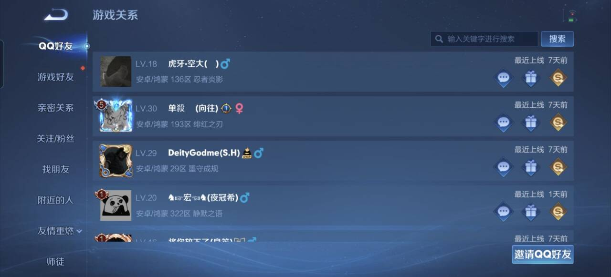
7.2 社交系统的设计逻辑
社交系统并非独立运作，而是与游戏内其他核心系统深度配合。与对战系统的配合最为紧密：好友在线状态、亲密关系升级、友情重燃任务均以共同对局为完成条件，社交关系的维护路径被统一为"一起打一局"，使得社交行为与核心玩法不可分割。与经济系统的配合体现在赠礼与V10共享皮肤——付费行为同时构成社交互动，消费价值从个人拥有扩展至关系维护。师徒系统则与新手成长体系衔接，将新玩家的学习路径从独自摸索转为有人引导，降低了新手期的沉默流失。
相比其他MOBA或竞技游戏，王者荣耀的社交系统具备两个结构性优势。其一，微信与QQ关系链的直接导入解决了社交冷启动问题——多数游戏的社交系统要求玩家在游戏内从零建立关系，而王者荣耀在登录瞬间即完成核心关系网的导入，新玩家首次进入时已拥有一张写满熟人名字的好友列表。其二，社交功能的覆盖广度使得任何两名玩家之间都存在一条可操作的社交升级路径：从最轻度的关注/粉丝（单向、零成本），到场景驱动的附近的人与最近一起游戏，到群体归属层级的车队与战队，再到经过正式认证的亲密关系与师徒关系。这一完整的关系光谱是多数竞品难以复制的。
八、总结与可优化方向
8.1 五种核心体验的支撑体系
前文拆解了王者荣耀的核心对战、局外经济、英雄设计、段位竞技、社交等系统。将这些系统重新聚拢可以发现，它们并非各自孤立运作，而是共同服务于五种核心体验。每一种体验背后，都有一组明确的系统在支撑。
| 体验类型 | 核心满足 | 对应的玩家需求 | 关键支撑系统（本报告对应章节） |
|---|---|---|---|
| 竞技成就感 | 在公平竞争中凭技术、策略与团队协作取胜 | 证明自身实力，获得客观的能力排名 | 排位段位体系（六）、巅峰赛与英雄战力（六）、ELO匹配机制（六）、对局MVP评分（三） |
| 社交归属感 | 与朋友共同参与、协作、分享，获得群体认同 | "朋友都在，我也要在"的社交连接 | 好友体系（七）、车队与战队（七）、亲密关系与师徒（七）、V10共享皮肤（四、七） |
| 成长掌控感 | 通过持续投入见证自身水平的逐步提升 | "我从菜鸟变强了"的自我成长验证 | 段位晋升（六）、英雄熟练度提升（五）、赛季重置与勇者积分（六） |
| 即时爽感 | 在短时间内获得高强度的感官刺激与情绪释放 | 追求"爽"的瞬间情绪体验 | 英雄职业差异化设计（五）、团战视觉特效与音效反馈（三）、多杀通报与击杀提示（三）、逆风翻盘的情绪反差（三） |
| 审美愉悦 | 对视觉、听觉、叙事等美学元素的欣赏 | 对"美"的审美追求 | 英雄与皮肤美术设计（五）、语音与背景故事（五）、背景音乐分段变化（五） |
五种体验对应五种类型的玩家需求，覆盖了从操作型到社交型、从竞技型到收藏型的完整玩家光谱。它们不是互斥的选项，而是在同一款产品中并行运转、交替激活的多层满足机制。王者荣耀之所以能维持亿级DAU的规模，根本原因不在于某一个系统的设计精巧，而在于它用不同的系统组合同时满足了不同动机的玩家——一个只想和朋友开黑的轻度玩家和一个冲击国服排名的硬核玩家，从同一款产品中获取的是截然不同的价值，但每一份价值都足够充分。
8.2 核心成功要素
综合前文分析，王者荣耀作为运营超过10年仍保持顶级DAU的产品，其设计的成功可归结为以下五个核心要素：
第一，减法背后有一套清晰的取舍逻辑。王者荣耀对端游MOBA的简化并非均匀削减，而是遵循一条明确的原则：削减个体机械操作负担，保留团队策略多样性。补刀惩罚被弱化，但经济资源的争夺被草丛伏击与野区入侵机制保留；插眼被移除，但视野博弈被草丛密度与英雄探草技能补偿；装备主动技能被砍，但装备被动效果的搭配空间被完整保留。这些取舍的共同指向是：让操作门槛降低到触屏可承受的范围内，同时让策略深度通过团队协作而非个人手速来表达。结果是一个新手能快速上手、但高手仍有足够区分度的竞技系统——这是所有同期移动端MOBA想做但没做到的事。
第二，设计顺应人性而非对抗人性。王者荣耀的系统设计中反复出现一种模式：不要求玩家克服自己的心理弱点，而是设计系统来容纳这些心理。ELO不在连败时告诉玩家"你该调整心态"，而是在下一局匹配更弱的对手让他赢回来；保星与勇者积分不在失败时给予零回报，而是给"差一点就赢了"的局一个缓冲，让挫败感停留在可承受的范围内；赠礼系统不要求玩家克服"熟人之间不好意思谈钱"的心理，而是将馈赠包装为游戏内的社交互动，消除金钱往来的尴尬；+10攻击力不追求"绝对公平"的纯净性，而是给付费玩家一个心理上的回报确认，同时将数值精确压至不足以影响任何一场对局胜负归属的水平。这种设计哲学的核心是承认玩家是不完美的——会冲动、会沮丧、会在意面子、会不好意思——然后设计系统来容纳这些不完美，而不是要求玩家改变自己来适应系统。
第三，留存靠的是接力棒而非单引擎。游戏玩法的趣味性有半衰期——再好玩的对局，重复上千场后新鲜感也会衰减。王者荣耀的应对不是把对局做得更耐玩，而是在玩法驱动开始衰减时让下一个驱动层接手：排位段位接过玩法的棒，用晋升目标和段位标签提供中期留存；当段位攀升遇到瓶颈或天花板时，社交关系接过段位的棒，用朋友约定和群体归属提供长期留存。三层驱动不是平铺的选项，而是有时间顺序的接力——每一层在前一层尚未失效时就已经启动，确保玩家在任何阶段都有一个足够强的理由继续登录。
第四，社交不是功能模块，而是产品的基础设施。大多数游戏把社交当作一个功能来添加——加个好友列表、加个公会、加个聊天频道。王者荣耀的做法相反：微信与QQ关系链不是被"添加"到游戏里，而是游戏本身被嵌入到已有的社交网络中。当玩家打开游戏，看到的是自己已经拥有的好友列表，而不是一个需要从零建立的游戏内社交面板。这种设计将社交从"游戏内的一种活动"变成了"游戏存在的底层环境"——社交关系构成了一种超越玩法层面的退出成本，离开不仅是放弃一款游戏，也是放弃与一群人的日常连接。这是所有非腾讯系竞品无法复制的结构性优势。
第五，变现的克制不是道德选择，而是数学选择。在一个竞技游戏中，售卖数值是最快的赚钱方式，但它会从两端同时侵蚀用户基础：免费玩家因不公平而流失，付费玩家因缺少足够对手而流失。王者荣耀选择了另一条路径：用绝对公平维持最大规模的用户盘，然后向这个大盘出售外观。皮肤不提供实质性数值加成（+10攻击力仅具象征意义）、英雄可用金币免费获取、铭文全面免费化——这三条准则确保任何一场排位赛的胜负都只与玩家水平相关，与消费金额无关。这种克制的本质不是"善良"，而是一道算对了的数学题：1亿DAU乘以每人每年几十元的外观消费，远大于100万DAU乘以每人每年几千元的数值消费。
8.3 可优化方向
以下从个人角度，讨论王者荣耀当前一个值得关注的发展方向。
作为运营超过10年的产品，王者荣耀的5v5排位与巅峰赛体系已高度成熟。在维护这一核心竞技体系的前提下，持续开发具备深度复玩性的替代模式，是产品获取新增量的关键方向——新模式作为5v5之外的独立内容存在，不影响核心竞技的运转。 王者荣耀在此方向已有大量投入，觉醒之战、模拟战、无限乱斗等模式取得了阶段性热度，但普遍面临复玩动力不足的问题。根本原因在于这些模式以规则变化驱动新鲜感——技能冷却缩短、英雄池随机化等——当玩家熟悉新规则后体验迅速趋同。真正具备长期吸引力的模式，其深度不来自规则本身的复杂度，而来自系统要素之间的联动密度。以roguelike品类为例，其复玩性不源于关卡随机，而源于道具、角色、技能之间的大量交互——一个道具的效果因另一个道具的存在而发生质变，组合数随要素增加呈指数增长，每次对局都是不同联动的叠加结果。 将这一逻辑应用于王者荣耀，意味着新模式不应仅是"英雄+变异规则"，而应在已有英雄体系之上构建一套独立的联动机制——英雄与模式专属装备之间、不同强化方向之间、英雄技能与模式规则之间产生化学反应，使每局的选择叠加导向不可预知的策略组合。这一方向的额外优势在于两方面：一是无需从零构建内容资产，复用已有的120余名英雄及其技能体系，通过叠加联动规则生成大量可探索的策略空间；二是依托现有的亿级用户基础，任何具备足够品质的新模式在上线之初就拥有一个独立游戏无法企及的启动规模，投入产出比远高于从零开发一个全新产品。 若能在这个方向上做出真正有深度的模式，便为产品打开了一条独立于5v5竞技之外的第二增长曲线。王者荣耀已有的英雄IP、亿级活跃用户、成熟的社交关系链，这些资产一旦被一个具备足够深度的新模式承接，所产生的用户粘性与商业价值是任何一个独立新游戏都无法企及的。